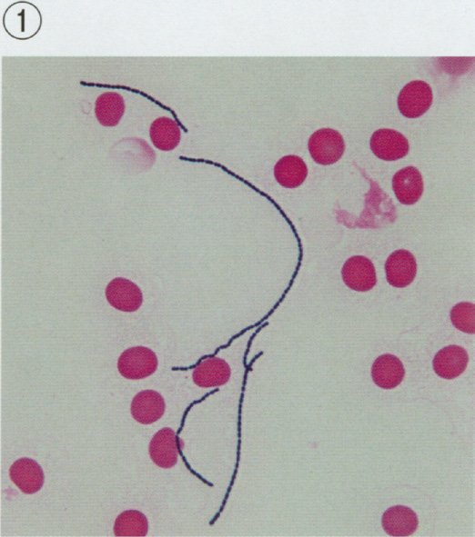
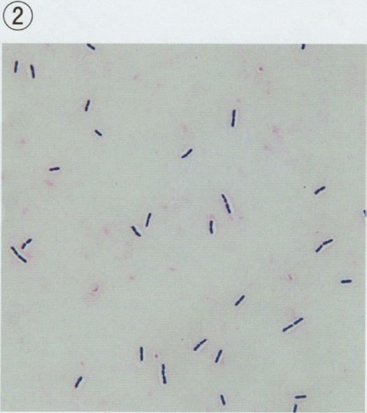
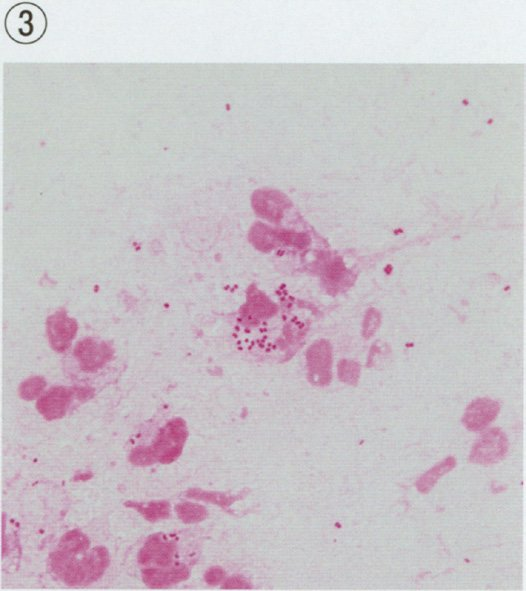
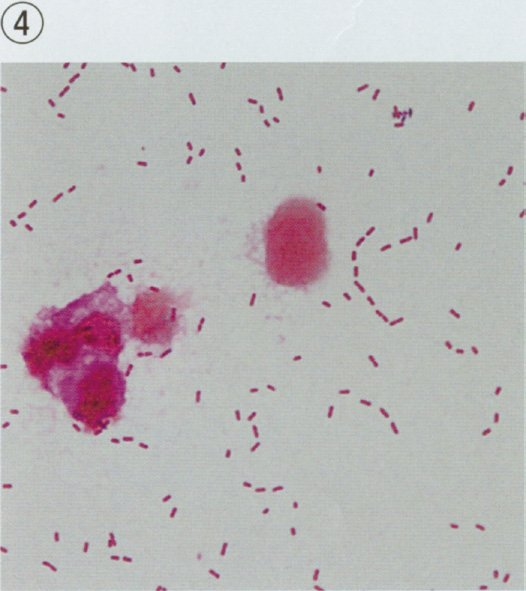
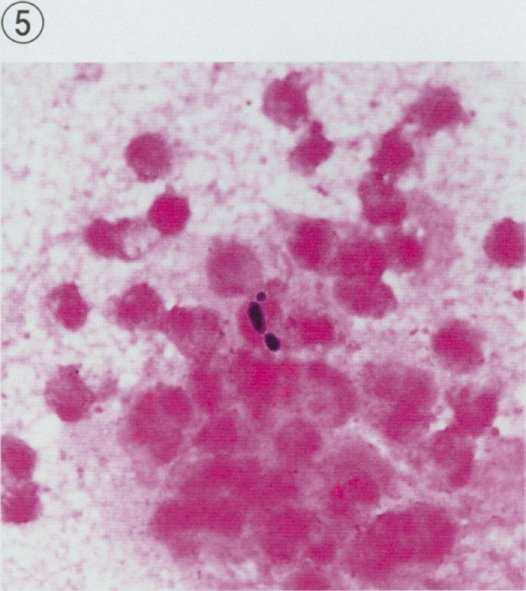
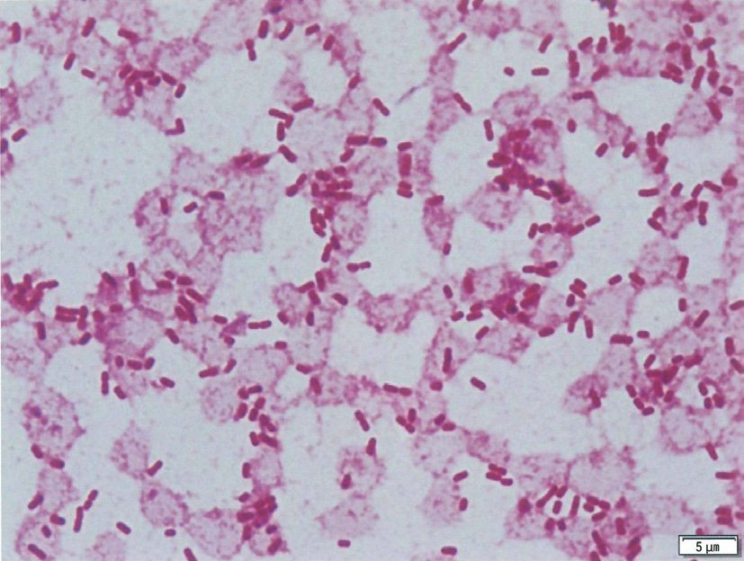
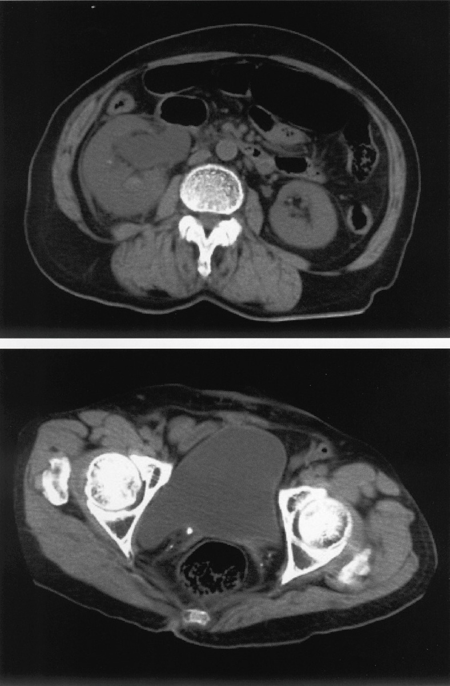

§
A問題（★問題）
Q.215〜Q.222
Q.215(120A-24)★CBT97%
30 歳の男性。排尿時痛と尿道からの膿性分泌物を主訴に来院した。5 日前に性交渉を持ち、その後、痛みが生じるようになったという。尿所見：蛋白（－）、糖（－）、潜血（－）、沈渣に赤血球0 ～5/HPF、白血球50 ～100/HPF を認める。分泌物のGram 染色でGram 陰性双球菌を認めた。
この疾患で誤っているのはどれか。
この疾患で誤っているのはどれか。
ａ 咽頭炎の原因となる。
ｂ パートナーの女性に感染する。
ｃ クラミジアとの混合感染がある。
ｄ 診断にはPCR 検査が有用である。
ｅ ニューキノロン系抗菌薬が第一選択薬である。
✅
ｅ ニューキノロン系抗菌薬が第一選択薬である。
淋菌はニューキノロン耐性が広がっており、第一選択はセフトリアキソン1g単回点滴静注。
🔎 淋菌性尿道炎——「数日前の性交渉」＋「膿性分泌物」＋「Gram陰性双球菌」
Neisseria gonorrhoeae は好中球に貪食されたGram陰性双球菌（コーヒー豆が2つ向かい合った形）として見える。男性尿道炎ではこの塗抹だけで感度・特異度とも95％以上あり、外来でその場に診断できる数少ない感染症である。【淋菌が「派手」でクラミジアが「地味」な理由】淋菌は粘膜上皮に強く接着して好中球を大量に呼ぶので、潜伏期2〜7日と短く、分泌物は黄白色で多量、排尿時痛も強い。一方クラミジアは細胞内でゆっくり増えるため、潜伏期1〜3週・漿液性で少量・無症状のことすらある。
【治療が注射一択になった経緯】淋菌は耐性獲得の速さで知られ、ペニシリン→テトラサイクリン→ニューキノロン→経口セフェムと次々に使えなくなった。現在残っているのはセフトリアキソン（点滴静注）とスペクチノマイシン（筋注）だけで、「内服で帰す」選択肢が出てきたら誤りと考えてよい。
□ 選択肢の検討
| 選択肢 | 解説 |
|---|---|
| ａ 咽頭炎の原因となる。 | 正しい。オーラルセックスで咽頭に感染する。咽頭淋菌感染はほとんど無症状で見逃されるうえ、抗菌薬が届きにくく除菌しにくい——耐性菌の温床であり、尿道炎を診たら咽頭も検査する。 |
| ｂ パートナーの女性に感染する。 | 正しい。女性では子宮頸管炎となり、無症状のまま骨盤内炎症性疾患（PID）→ 卵管性不妊・子宮外妊娠へ進む。パートナーを同時に治療しないと繰り返し感染する（ピンポン感染）。 |
| ｃ クラミジアとの混合感染がある。 | 正しい。淋菌性尿道炎の20〜30％にクラミジアが併存する。淋菌を叩いてもクラミジアが残ると1〜3週後に「治らない尿道炎」として再燃するので、両方を検査するか初めから併せて治療する（NO.241の「90％」は数字が誤り）。 |
| ｄ 診断にはPCR 検査が有用である。 | 正しい。初尿を検体とする核酸増幅検査（PCR/TMA などのNAAT）が標準で、淋菌とクラミジアを同時に検出できる。男性尿道炎ではGram染色でその場に診断がつくが、咽頭・直腸・女性の頸管では常在Neisseria属と区別できないため確定はNAATによる。 |
| ◯ ｅ ニューキノロン系抗菌薬が第一選択薬である。 | ◯ これが誤り。日本の淋菌はニューキノロン耐性率が高く（過半数）、ペニシリン・テトラサイクリン・経口セフェムも使えない。第一選択はセフトリアキソン1g の単回点滴静注で、内服薬で治す病気ではない。 |
📌 淋菌 vs クラミジア——1枚で6問（215・217・225・228・230・241）が解ける表
| 淋菌性尿道炎 | クラミジア性尿道炎 | |
|---|---|---|
| 病原体 | Neisseria gonorrhoeae Gram陰性双球菌 | Chlamydia trachomatis 偏性細胞内寄生体 |
| 潜伏期 | 2〜7日 | 1〜3週 |
| 分泌物 | 膿性・多量／排尿時痛が強い | 漿液〜粘液性・少量／症状が軽い〜無症状 |
| Gram染色 | 好中球内にGram陰性双球菌＝診断可 | 染まらない（＝菌が見えない尿道炎） |
| 確定診断 | 初尿の核酸増幅検査（PCR/TMA）——どちらも同じ検体で同時に調べられる | |
| 治療 | セフトリアキソン1g 単回点滴静注 | アジスロマイシン1g 単回内服 またはドキシサイクリン7日 |
| 落とし穴 | ニューキノロン耐性／咽頭・直腸感染 | 淋菌との混合感染20〜30％／女性のPID・不妊 |
🎯 国試ポイント
①膿性分泌物＋Gram陰性双球菌＝淋菌。その場で診断できる。②確定診断・スクリーニングは初尿の核酸増幅検査（PCR/NAAT）。
③第一選択はセフトリアキソン単回点滴静注。ニューキノロン・経口セフェムは耐性で不可。
④咽頭・直腸にも感染し、咽頭は無症状でも治療対象。
⑤パートナーの同時治療が必須（ピンポン感染）。
⑥クラミジアの混合感染は20〜30％——「90％」という数字が出たら誤り（NO.241）。
Q.216(120B-18)★CBT必修📷95%
Gram 染色標本（①〜⑤）を示す。
急性腎盂腎炎の原因菌で最も多いのはどれか。
急性腎盂腎炎の原因菌で最も多いのはどれか。





ａ ①
ｂ ②
ｃ ③
ｄ ④
ｅ ⑤
✅
ｄ ④
赤く染まる短桿菌（Gram陰性桿菌）＝大腸菌。急性腎盂腎炎の原因菌の70〜90％を占める。
🔎 尿路感染症の起炎菌——「大腸菌が8割」の理由
尿路感染はほぼすべてが上行性感染である。会陰部に付着した腸内細菌が外尿道口 → 膀胱 → 尿管 → 腎盂へさかのぼるので、起炎菌の顔ぶれは腸内細菌そのものになる。女性に多いのは尿道が短く（約4cm）肛門に近いためで、男性の尿道は約20cmあり、そこを越えて腎まで達するには閉塞や残尿といった後押しが要る（NO.219）。【単純性と複雑性で菌の顔ぶれが変わる】単純性（若年女性・尿路に異常なし）では E. coli が70〜90％と圧倒的で、経験的治療が組み立てやすい。一方複雑性（カテーテル留置・結石・前立腺肥大・院内発症）では緑膿菌・腸球菌・Serratia・Klebsiella など多彩で耐性菌も増える——だからこそ培養を採ってから抗菌薬を始める。
□ 選択肢の検討
| 選択肢 | 解説 |
|---|---|
| ａ ① | 青紫に染まる球菌が数珠状に長く連なっている＝Gram陽性球菌（連鎖球菌）。尿路感染の起炎菌としてはB群溶連菌が妊婦などでみられる程度で頻度は低い。 |
| ｂ ② | 青紫に染まる桿菌＝Gram陽性桿菌。Bacillus・Clostridium・Corynebacterium・Listeria などが該当し、尿路感染の起炎菌になることはほとんど無い（尿検体で出れば多くは皮膚の常在菌の混入）。 |
| ｃ ③ | 白血球・上皮に混じって淡赤色の小球菌が集塊をつくっている＝Gram陰性球菌。代表はNeisseria属（淋菌・髄膜炎菌）で、淋菌は尿道炎の起炎菌であって腎盂腎炎は起こさない。 |
| ◯ ｄ ④ | ◯ 赤く染まる短い桿菌が多数散在し、好中球も混じる＝Gram陰性桿菌。急性腎盂腎炎の原因菌の70〜90％を占める Escherichia coli がこれで、本問はこの1枚を選べばよい。 |
| ｅ ⑤ | 白血球の集塊のなかに濃青の双球菌がみえる＝Gram陽性球菌（双球菌）。肺炎球菌などが該当し、肺炎の喀痰では主役だが尿路感染では稀。 |
📌 Gram染色は「色」と「形」の2択×2択で読む
| 球菌 | 桿菌 | |
|---|---|---|
| 青紫＝Gram陽性 （厚いペプチドグリカンがクリスタル紫を保持） | 連鎖＝Streptococcus ブドウ房＝Staphylococcus 双球＝肺炎球菌 腸球菌（Enterococcus） | Bacillus／Clostridium Corynebacterium／Listeria |
| 赤＝Gram陰性 （外膜のせいで脱色されサフラニンで赤く染まる） | Neisseria（淋菌・髄膜炎菌） Moraxella | E. coli／Klebsiella／Proteus／緑膿菌 ＝尿路感染の主役 |
🎯 国試ポイント
①尿路感染の起炎菌 第1位は Escherichia coli（Gram陰性桿菌）。単純性では70〜90％。②色は「青紫＝陽性／赤＝陰性」、形は「球菌／桿菌」の2×2で読む。
③複雑性尿路感染では緑膿菌・腸球菌・耐性菌が増える。
④尿沈渣のGram染色は初期抗菌薬の選択に直結する（NO.242）。
⑤感染経路は上行性。女性に多いのは尿道が短いから。
Q.217(119A-42)★84%
25 歳の男性。排尿時痛を主訴に来院した。昨日から強い排尿時痛と尿道口に膿性分泌物を認めるため受診した。定期的に性交渉を行うパートナーがいる。尿所見：蛋白（－）、糖（－）、沈渣に赤血球1 ～4/HPF、白血球100 以上/HPF。Gram 染色の鏡検でGram 陰性双球菌を認める。
この疾患で正しいのはどれか。
この疾患で正しいのはどれか。
ａ 潜伏期間は2 ～3 週間である。
ｂ パートナーの治療は不要である。
ｃ 1 回感染すると終生免疫を獲得する。
ｄ ニューキノロン系抗菌薬を投与する。
ｅ 確定診断には核酸増幅検査が用いられる。
✅
ｅ 確定診断には核酸増幅検査が用いられる。
淋菌の確定診断は初尿の核酸増幅検査（NAAT）。潜伏期は2〜7日で、治療はセフトリアキソン。
🔎 「見えているのに、なぜ核酸増幅検査なのか」
男性の尿道分泌物であればGram染色で好中球内のGram陰性双球菌を確認した時点で治療を始めてよい——感度・特異度とも95％を超えるからである。それでも確定診断がNAATとされる理由は3つある。① 咽頭・直腸・女性の子宮頸管には常在のNeisseria属がいて、形態だけでは淋菌と区別できない。
② 淋菌は乾燥・低温・炭酸ガス欠乏に弱く、培養に出すと輸送中に死ぬ（培養は感度が落ちるが、薬剤感受性を知る唯一の手段なので耐性が疑われる例では併用する）。
③ 同じ検体でクラミジアも同時に判定できる——20〜30％の混合感染を1回で拾えるのは臨床的に大きい。
検体は「初尿」＝出はじめの10〜20mLである。中間尿では尿道の菌が洗い流されてしまい偽陰性になる——膀胱炎の尿培養（中間尿）とは正反対なので注意。
□ 選択肢の検討
| 選択肢 | 解説 |
|---|---|
| ａ 潜伏期間は2 ～3 週間である。 | 淋菌の潜伏期は2〜7日——本例も「昨日から」の急な発症である。2〜3週間はクラミジアの潜伏期で、両者の入れ替えは頻出。 |
| ｂ パートナーの治療は不要である。 | パートナーが無症状でも保菌していれば必ず再感染する（ピンポン感染）。女性は子宮頸管炎として無症状に経過し、気づかぬうちにPID・不妊へ進むので、パートナーの検査と同時治療は淋菌・クラミジアの治療の一部である。 |
| ｃ 1 回感染すると終生免疫を獲得する。 | 淋菌に有効な感染防御免疫は成立せず、何度でも罹る。淋菌は線毛や外膜蛋白の抗原性を頻繁に変えるため、ワクチンも実用化されていない。 |
| ｄ ニューキノロン系抗菌薬を投与する。 | 日本の淋菌はニューキノロン耐性率が高く、第一選択にならない。第一選択はセフトリアキソン1g 単回点滴静注（NO.215・230・241で繰り返し問われる）。 |
| ◯ ｅ 確定診断には核酸増幅検査が用いられる。 | ◯ 初尿を検体とする核酸増幅検査（NAAT：PCR・TMA など）が確定診断。淋菌とクラミジアを1本の検体で同時に判定でき、淋菌は乾燥・低温に弱く培養では死んでしまうことが多いのに対しNAATは死菌でも検出できる。 |
📌 性感染症で必ず問われる5点
| 論点 | 答え方 |
|---|---|
| 潜伏期 | 淋菌2〜7日／クラミジア1〜3週／梅毒3週／尖圭コンジローマ3週〜8か月 |
| パートナー | 無症状でも同時に検査・治療。治療完了までは性交渉を控える |
| 免疫 | STIに終生免疫は無い。再感染を前提に指導する |
| 併存STI | HIV・梅毒・B/C型肝炎を必ず併せて検査（1つ見つかれば他も探す） |
| 届出 | 淋菌感染症・性器クラミジア感染症は5類（定点把握）／梅毒・HIVは5類（全数把握） |
🎯 国試ポイント
①確定診断は初尿の核酸増幅検査。検体は「初尿」で中間尿ではない。②潜伏期は淋菌2〜7日／クラミジア1〜3週。
③終生免疫は成立しない。
④パートナーの同時治療まで含めて治療。
⑤治療はセフトリアキソン点滴静注。ニューキノロンは耐性。
Q.218(119E-11)★必修99%
腎盂腎炎の診察に有用なのはどれか。
ａ 振水音の聴診
ｂ Traube 三角の打診
ｃ 鼠径リンパ節の触診
ｄ 腹部血管雑音の聴診
ｅ 肋骨脊柱角の叩打診
✅
ｅ 肋骨脊柱角の叩打診
腎は後腹膜の肋骨脊柱角（CVA）の奥にある。CVA叩打痛が腎盂腎炎の身体所見。
🔎 なぜ「叩く」と分かるのか——腎被膜の伸展痛
腎は第12肋骨と脊柱がつくる肋骨脊柱角（costovertebral angle：CVA）の奥、後腹膜腔にある。腹壁からは遠く、前から押しても届かないので、背側から手掌を当てて拳で叩き、振動を伝えて痛みを誘発する。【痛みの正体】腎実質そのものには痛覚が乏しい。痛むのは腎被膜（Gerota筋膜の内側の線維被膜）が急に伸展されたときで、腎盂腎炎（浮腫で腎が腫れる）・水腎症（腎盂が張る）・腎梗塞・腎周囲膿瘍で陽性になる。
逆に膀胱炎ではCVA叩打痛は出ない——CVA叩打痛の有無が「膀胱炎か腎盂腎炎か」を分ける最初の一手である（発熱の有無と合わせて使う＝NO.227）。
□ 選択肢の検討
| 選択肢 | 解説 |
|---|---|
| ａ 振水音の聴診 | 振水音（succussion splash）は胃・腸に液体と空気が同時に貯留したときの音で、幽門狭窄・胃拡張・イレウスを疑う所見。腎とは無関係。 |
| ｂ Traube 三角の打診 | Traube三角（左季肋部の鼓音域）が濁音化すれば脾腫を示唆する。脾の診察であって腎の診察ではない。 |
| ｃ 鼠径リンパ節の触診 | 鼠径リンパ節は下肢・会陰・肛門・外陰部からのリンパを受ける。腫脹すれば下肢の感染・性感染症・陰茎癌の転移などを考える。腎のリンパ流は傍大動脈（後腹膜）へ向かい鼠径には来ない。 |
| ｄ 腹部血管雑音の聴診 | 腹部血管雑音は腎血管性高血圧（腎動脈狭窄）や腹部大動脈瘤で聴かれる。腎に関係はするが「血管」の所見であって炎症の所見ではない。 |
| ◯ ｅ 肋骨脊柱角の叩打診 | ◯ 肋骨脊柱角（CVA）叩打痛＝腎盂腎炎の身体所見そのもの。第12肋骨と脊柱がつくる角の奥に腎が位置し、腎実質の炎症で腎が腫れ被膜が伸展すると、叩打の振動が響いて痛む。 |
📌 本章で4回問われる所見——CVA叩打痛（218・234・237・238）
| 診察手技 | 陽性のとき考える疾患 |
|---|---|
| 肋骨脊柱角の叩打（CVA tenderness） | 急性腎盂腎炎・尿管結石・腎梗塞・腎周囲膿瘍 |
| 振水音の聴診 | 幽門狭窄・イレウス・胃拡張 |
| Traube三角の打診 | 脾腫 |
| 腹部血管雑音の聴診 | 腎動脈狭窄・腹部大動脈瘤 |
| 鼠径リンパ節の触診 | 下肢/会陰の感染・性感染症・陰茎癌の転移 |
| 恥骨上部の圧痛・膨隆 | 膀胱炎・尿閉（膨隆した膀胱） |
| 直腸指診での前立腺の圧痛 | 急性前立腺炎（NO.223・229） |
🎯 国試ポイント
①腎盂腎炎＝発熱＋CVA叩打痛＋膿尿・細菌尿の3点セット。②CVA叩打痛の有無が膀胱炎と腎盂腎炎を分ける。
③痛みの正体は腎被膜の急な伸展。尿管結石・腎梗塞でも陽性になる。
④腎は後腹膜臓器で、前からは触れない。
⑤本章では218・234・237・238の4問がこの所見を答えさせている。
Q.219(118D-6)★81%
成人男性の急性腎盂腎炎をきたす原因で最も頻度が高いのはどれか。
ａ 性感染症
ｂ 過活動膀胱
ｃ 糖尿病腎症
ｄ 間質性膀胱炎
ｅ 尿管嵌頓結石
✅
ｅ 尿管嵌頓結石
男性の腎盂腎炎は「複雑性」＝背後に閉塞がある。筆頭は尿管嵌頓結石。
🔎 「男性の腎盂腎炎」は、それだけで異常事態
女性の尿道は約4cmと短く肛門に近いため、健康な若年女性でも単純性の膀胱炎・腎盂腎炎を起こす。これに対し男性の尿道は約20cmあり、前立腺液には抗菌作用もあるので、「そもそも上りにくい」。したがって成人男性が腎盂腎炎になったということは、その障壁を越えさせる「後押し」が背後にあると考える——すなわち複雑性尿路感染である。
【後押しの正体】尿管結石の嵌頓・前立腺肥大症による残尿と尿閉・尿路腫瘍・尿道カテーテル留置・膀胱尿管逆流・神経因性膀胱。なかでも尿管に結石が嵌まると、その上流は行き止まりの培養器になる——抗菌薬は血流に乗って腎実質までは届くが、閉塞した腎盂の膿には届かない。だから閉塞性腎盂腎炎の治療は抗菌薬ではなくドレナージ（尿管ステント留置または経皮的腎瘻造設）が先になる（第3章NO.75・105・118で3回反復した筋）。
□ 選択肢の検討
| 選択肢 | 解説 |
|---|---|
| ａ 性感染症 | 淋菌・クラミジアは尿道炎・前立腺炎・精巣上体炎を起こすが、腎盂腎炎の主因にはならない。これらは尿道から後方（前立腺→精管→精巣上体）へ広がるのであって、膀胱を越えて腎へ上るのは別の力学（閉塞・逆流）が要る。 |
| ｂ 過活動膀胱 | 過活動膀胱は「尿意切迫感」を主症状とする蓄尿障害で、むしろ膀胱が我慢できずに出してしまう病態＝残尿は増えない。尿が停滞しないので感染の温床にならない。 |
| ｃ 糖尿病腎症 | 糖尿病そのものは易感染性・神経因性膀胱による残尿・尿糖により尿路感染のリスク因子になるが、「腎症」＝糸球体の硬化性病変であって、細菌の通り道を塞ぐものではない。問われているのは頻度が最も高い原因である。 |
| ｄ 間質性膀胱炎 | 間質性膀胱炎（膀胱痛症候群）は細菌のいない慢性の膀胱痛・頻尿で、尿培養は陰性。感染を起こす病態ではない（第3章NO.71＝治療は膀胱水圧拡張術）。 |
| ◯ ｅ 尿管嵌頓結石 | ◯ 尿の流れが止まったところに細菌が入ると、排出されずに一気に増殖する。閉塞＋感染＝閉塞性腎盂腎炎で、数時間で敗血症性ショックへ進む泌尿器科の緊急疾患である。男性の腎盂腎炎ではこれを筆頭に「閉塞」を探す。 |
📌 単純性 vs 複雑性——どちらかで検査も治療も変わる
| 単純性尿路感染 | 複雑性尿路感染 | |
|---|---|---|
| 典型 | 若年〜閉経前の女性／尿路に基礎疾患なし | 男性・高齢者・小児／結石・前立腺肥大・腫瘍・カテーテル・糖尿病・妊娠 |
| 起炎菌 | E. coli が70〜90％ | 緑膿菌・腸球菌・Serratia など多彩／耐性菌が多い |
| 画像 | 原則不要 | 必須（超音波→必要なら造影CT）で閉塞・膿瘍を探す |
| 治療 | 経口抗菌薬で外来治療も可 | 入院・点滴＋原因の解除（ドレナージ・カテーテル） |
| 治療期間 | 7〜14日 | 14日以上・再発しやすい |
🎯 国試ポイント
①成人男性の腎盂腎炎＝複雑性。背後の閉塞を探す。筆頭は尿管嵌頓結石。②閉塞性腎盂腎炎は抗菌薬より先にドレナージ（尿管ステント／腎瘻）。
③高齢男性なら前立腺肥大症による残尿・尿閉も主要な原因（NO.220〜222）。
④単純性は若年女性・E. coli・画像不要。
⑤糖尿病は「リスク因子」であって「最も頻度が高い原因」ではない。
Q.220(118F-67)★86%
【連問 NO.220〜222 共通の症例文】
80 歳の男性。発熱と排尿困難を主訴に来院した。
現病歴：3 日前から排尿困難を自覚していた。本日から悪寒戦慄を伴う発熱が出現したため救急外来を受診した。
既往歴：高血圧症、糖尿病、脂質異常症、うつ病および蕁麻疹に対してアンジオテンシン変換酵素〈ACE〉阻害薬、DPP-4 阻害薬、スタチン、三環系抗うつ薬およびヒスタミンH1 受容体拮抗薬を内服している。
生活歴：65 歳までは会社員で、現在は無職である。一人暮らし。喫煙は70 歳まで10 本/ 日を50 年間、飲酒は機会飲酒。ネコを飼育している。
家族歴：父が脳梗塞、母が糖尿病。
現 症：意識は清明。身長170cm、体重72kg。体温38.8℃。脈拍112/ 分、整。血圧136/60mmHg。呼吸数26/ 分。SpO2 98％（room air）。眼瞼結膜と眼球結膜とに異常を認めない。甲状腺腫と頸部リンパ節とを触知しない。心音と呼吸音とに異常を認めない。下腹部が膨隆しているが、圧痛を認めない。肝・脾は触知しない。左の肋骨脊柱角に叩打痛を認める。直腸指診で4cm 大の前立腺を触知し、圧痛を認めない。
検査所見：尿所見：蛋白1 ＋、糖1 ＋、潜血（－）、沈渣に赤血球1 ～4/HPF、白血球100 以上/HPF を認める。血液所見：赤血球461 万、Hb 14.9g/dL、Ht 44％、白血球14,300（桿状核好中球2％、分葉核好中球90％、好酸球1％、好塩基球1％、単球3％、リンパ球3％）、血小板12 万、PT-INR 1.18（基準0.9 ～1.1）。血液生化学所見：総蛋白6.6g/dL、アルブミン3.9g/dL、総ビリルビン1.5mg/dL、直接ビリルビン0.4mg/dL、AST 13U/L、ALT 15U/L、LD 219U/L（基準124 ～222）、ALP 79U/L（基準38 ～113）、γ-GT 30U/L（基準13 ～64）、CK 76U/L（基準59 ～248）、尿素窒素26mg/dL、クレアチニン1.3mg/dL、尿酸4.7mg/dL、血糖120mg/dL、HbA1c 7.0％（基準4.9 ～6.0）、総コレステロール197mg/dL、トリグリセリド226mg/dL、HDL コレステロール69mg/dL、LDL コレステロール83mg/dL、Na 138mEq/L、K 4.5mEq/L、Cl 105mEq/L。CRP 14mg/dL。胸部エックス線写真で心胸郭比51％、両側肺野に浸潤影を認めない。腹部超音波検査で膀胱内に大量の尿が貯留している所見を認めるが水腎症は認めない。
この患者の排尿困難との関連が疑われる薬剤はどれか。2 つ選べ。
80 歳の男性。発熱と排尿困難を主訴に来院した。
現病歴：3 日前から排尿困難を自覚していた。本日から悪寒戦慄を伴う発熱が出現したため救急外来を受診した。
既往歴：高血圧症、糖尿病、脂質異常症、うつ病および蕁麻疹に対してアンジオテンシン変換酵素〈ACE〉阻害薬、DPP-4 阻害薬、スタチン、三環系抗うつ薬およびヒスタミンH1 受容体拮抗薬を内服している。
生活歴：65 歳までは会社員で、現在は無職である。一人暮らし。喫煙は70 歳まで10 本/ 日を50 年間、飲酒は機会飲酒。ネコを飼育している。
家族歴：父が脳梗塞、母が糖尿病。
現 症：意識は清明。身長170cm、体重72kg。体温38.8℃。脈拍112/ 分、整。血圧136/60mmHg。呼吸数26/ 分。SpO2 98％（room air）。眼瞼結膜と眼球結膜とに異常を認めない。甲状腺腫と頸部リンパ節とを触知しない。心音と呼吸音とに異常を認めない。下腹部が膨隆しているが、圧痛を認めない。肝・脾は触知しない。左の肋骨脊柱角に叩打痛を認める。直腸指診で4cm 大の前立腺を触知し、圧痛を認めない。
検査所見：尿所見：蛋白1 ＋、糖1 ＋、潜血（－）、沈渣に赤血球1 ～4/HPF、白血球100 以上/HPF を認める。血液所見：赤血球461 万、Hb 14.9g/dL、Ht 44％、白血球14,300（桿状核好中球2％、分葉核好中球90％、好酸球1％、好塩基球1％、単球3％、リンパ球3％）、血小板12 万、PT-INR 1.18（基準0.9 ～1.1）。血液生化学所見：総蛋白6.6g/dL、アルブミン3.9g/dL、総ビリルビン1.5mg/dL、直接ビリルビン0.4mg/dL、AST 13U/L、ALT 15U/L、LD 219U/L（基準124 ～222）、ALP 79U/L（基準38 ～113）、γ-GT 30U/L（基準13 ～64）、CK 76U/L（基準59 ～248）、尿素窒素26mg/dL、クレアチニン1.3mg/dL、尿酸4.7mg/dL、血糖120mg/dL、HbA1c 7.0％（基準4.9 ～6.0）、総コレステロール197mg/dL、トリグリセリド226mg/dL、HDL コレステロール69mg/dL、LDL コレステロール83mg/dL、Na 138mEq/L、K 4.5mEq/L、Cl 105mEq/L。CRP 14mg/dL。胸部エックス線写真で心胸郭比51％、両側肺野に浸潤影を認めない。腹部超音波検査で膀胱内に大量の尿が貯留している所見を認めるが水腎症は認めない。
この患者の排尿困難との関連が疑われる薬剤はどれか。2 つ選べ。
ａ アンジオテンシン変換酵素〈ACE〉阻害薬
ｂ DPP-4 阻害薬
ｃ スタチン
ｄ 三環系抗うつ薬
ｅ ヒスタミンH1 受容体拮抗薬
✅
ｄ・ｅ
抗コリン作用をもつ三環系抗うつ薬と第1世代H1受容体拮抗薬が排尿筋を緩め、尿閉を招く。
🔎 排尿の神経支配から考えれば、尿閉を起こす薬は2種類しかない
排尿は「骨盤神経（副交感神経）がアセチルコリンを出し、ムスカリンM3受容体を介して排尿筋を収縮させる」＋「尿道括約筋が緩む」で成り立つ。蓄尿はその逆で下腹神経（交感神経）がβ3で排尿筋を緩め、α1で尿道を締める（第1章の骨格）。したがって尿を出せなくする薬は——
① 抗コリン薬（排尿筋を収縮させない）
② α刺激薬（尿道を締める）
の2系統に限られる。市販の総合感冒薬にはこの両方が入っている（抗ヒスタミン薬＋血管収縮薬）——「風邪薬を飲んだ夜から尿が出ない高齢男性」という典型症例が繰り返し出題される所以である。
本例は前立腺4cm＋下腹部膨隆＝溢流のもとになる尿閉があり、そこへ三環系抗うつ薬とH1拮抗薬という抗コリン薬が2剤重なっている。
□ 選択肢の検討
| 選択肢 | 解説 |
|---|---|
| ａ アンジオテンシン変換酵素〈ACE〉阻害薬 | 副作用は空咳・高K血症・血管浮腫・腎機能悪化で、排尿に影響しない。 |
| ｂ DPP-4 阻害薬 | 単独では低血糖を起こしにくい経口血糖降下薬。副作用として水疱性類天疱瘡・急性膵炎が知られるが、排尿とは関係しない。 |
| ｃ スタチン | 横紋筋融解症・肝障害が代表的副作用。排尿機能には影響しない。 |
| ◯ ｄ 三環系抗うつ薬 | ◯ 強い抗コリン作用をもち、排尿筋（膀胱平滑筋）のムスカリン受容体を遮断して収縮力を落とす。口渇・便秘・霧視・尿閉・せん妄がまとめて出るのが特徴で、前立腺肥大症のある高齢男性では尿閉の引き金になる。 |
| ◯ ｅ ヒスタミンH1 受容体拮抗薬 | ◯ 第1世代の抗ヒスタミン薬は抗コリン作用を併せもつ。蕁麻疹・感冒薬として広く使われるのに、高齢男性では尿閉を起こす——市販の総合感冒薬で尿閉、はMECの定番症例（第4章で5回反復した）。 |
📌 尿閉を起こす薬——「抗コリン」と「α刺激」で覚える
| 機序 | 代表薬 | ひとこと |
|---|---|---|
| 抗コリン作用 （排尿筋を収縮させない） | 三環系抗うつ薬 | 口渇・便秘・霧視・尿閉・せん妄がセット |
| 第1世代抗ヒスタミン薬 | 感冒薬・鼻炎薬・睡眠改善薬に広く含まれる | |
| 抗パーキンソン病薬（トリヘキシフェニジル等） | 高齢者で危険 | |
| 過活動膀胱治療薬（オキシブチニン等）・鎮痙薬 | 前立腺肥大症には原則使わない（第4章で4問） | |
| α刺激作用 （尿道を締める） | フェニレフリン・エフェドリン（総合感冒薬・鼻炎薬） | 抗ヒスタミン薬と同じ薬に入っている |
| その他 | オピオイド・全身麻酔・Ca拮抗薬 | 術後尿閉の原因 |
🎯 国試ポイント
①尿閉を起こす薬は「抗コリン薬」と「α刺激薬」の2系統だけ。②三環系抗うつ薬・第1世代抗ヒスタミン薬が代表。
③市販の総合感冒薬は両方入っている——BPHの高齢男性で尿閉の定番の引き金。
④排尿＝骨盤神経（副交感・アセチルコリン）／蓄尿＝下腹神経（交感）。
⑤ACE阻害薬・DPP-4阻害薬・スタチンは排尿に無関係。
Q.221(118F-68)★67%
【連問 NO.220〜222 共通の症例文】
80 歳の男性。発熱と排尿困難を主訴に来院した。
現病歴：3 日前から排尿困難を自覚していた。本日から悪寒戦慄を伴う発熱が出現したため救急外来を受診した。
既往歴：高血圧症、糖尿病、脂質異常症、うつ病および蕁麻疹に対してアンジオテンシン変換酵素〈ACE〉阻害薬、DPP-4 阻害薬、スタチン、三環系抗うつ薬およびヒスタミンH1 受容体拮抗薬を内服している。
生活歴：65 歳までは会社員で、現在は無職である。一人暮らし。喫煙は70 歳まで10 本/ 日を50 年間、飲酒は機会飲酒。ネコを飼育している。
家族歴：父が脳梗塞、母が糖尿病。
現 症：意識は清明。身長170cm、体重72kg。体温38.8℃。脈拍112/ 分、整。血圧136/60mmHg。呼吸数26/ 分。SpO2 98％（room air）。眼瞼結膜と眼球結膜とに異常を認めない。甲状腺腫と頸部リンパ節とを触知しない。心音と呼吸音とに異常を認めない。下腹部が膨隆しているが、圧痛を認めない。肝・脾は触知しない。左の肋骨脊柱角に叩打痛を認める。直腸指診で4cm 大の前立腺を触知し、圧痛を認めない。
検査所見：尿所見：蛋白1 ＋、糖1 ＋、潜血（－）、沈渣に赤血球1 ～4/HPF、白血球100 以上/HPF を認める。血液所見：赤血球461 万、Hb 14.9g/dL、Ht 44％、白血球14,300（桿状核好中球2％、分葉核好中球90％、好酸球1％、好塩基球1％、単球3％、リンパ球3％）、血小板12 万、PT-INR 1.18（基準0.9 ～1.1）。血液生化学所見：総蛋白6.6g/dL、アルブミン3.9g/dL、総ビリルビン1.5mg/dL、直接ビリルビン0.4mg/dL、AST 13U/L、ALT 15U/L、LD 219U/L（基準124 ～222）、ALP 79U/L（基準38 ～113）、γ-GT 30U/L（基準13 ～64）、CK 76U/L（基準59 ～248）、尿素窒素26mg/dL、クレアチニン1.3mg/dL、尿酸4.7mg/dL、血糖120mg/dL、HbA1c 7.0％（基準4.9 ～6.0）、総コレステロール197mg/dL、トリグリセリド226mg/dL、HDL コレステロール69mg/dL、LDL コレステロール83mg/dL、Na 138mEq/L、K 4.5mEq/L、Cl 105mEq/L。CRP 14mg/dL。胸部エックス線写真で心胸郭比51％、両側肺野に浸潤影を認めない。腹部超音波検査で膀胱内に大量の尿が貯留している所見を認めるが水腎症は認めない。
尿道カテーテルを留置し、血液培養2 セットと尿培養を採取したのちに入院した。入院後からセフトリアキソンの投与を開始した。入院翌日に血液培養は2 セットとも陽性になり、Escherichia coli と同定された。薬剤感受性試験の結果を表1 に示す。尿培養からの検出菌および薬剤感受性試験の結果は血液培養と同じであった。現時点での血清クレアチニンは1.0mg/dL であり、体重は入院時から変化していない。セフトリアキソンの投与を中止し抗菌薬を変更することになった。Cockcroft-Gault の計算式と表2 に腎機能に応じた抗菌薬推奨投与方法を示す。
表1．薬剤感受性試験結果
S：susceptible（感性） R：resistant（耐性）
Cockcroft-Gault の計算式
男性：クレアチニンクリアランス＝｛（140 －年齢）×体重（kg）｝/｛72 ×血清クレアチニン値（mg/dL）｝
表2．腎機能に応じた抗菌薬推奨投与方法（当該医療機関で定めたもの）
CrCl：クレアチニンクリアランス
表2 のうち、セフトリアキソンからの抗菌薬変更に際し、最も適切な投与方法はどれか。
80 歳の男性。発熱と排尿困難を主訴に来院した。
現病歴：3 日前から排尿困難を自覚していた。本日から悪寒戦慄を伴う発熱が出現したため救急外来を受診した。
既往歴：高血圧症、糖尿病、脂質異常症、うつ病および蕁麻疹に対してアンジオテンシン変換酵素〈ACE〉阻害薬、DPP-4 阻害薬、スタチン、三環系抗うつ薬およびヒスタミンH1 受容体拮抗薬を内服している。
生活歴：65 歳までは会社員で、現在は無職である。一人暮らし。喫煙は70 歳まで10 本/ 日を50 年間、飲酒は機会飲酒。ネコを飼育している。
家族歴：父が脳梗塞、母が糖尿病。
現 症：意識は清明。身長170cm、体重72kg。体温38.8℃。脈拍112/ 分、整。血圧136/60mmHg。呼吸数26/ 分。SpO2 98％（room air）。眼瞼結膜と眼球結膜とに異常を認めない。甲状腺腫と頸部リンパ節とを触知しない。心音と呼吸音とに異常を認めない。下腹部が膨隆しているが、圧痛を認めない。肝・脾は触知しない。左の肋骨脊柱角に叩打痛を認める。直腸指診で4cm 大の前立腺を触知し、圧痛を認めない。
検査所見：尿所見：蛋白1 ＋、糖1 ＋、潜血（－）、沈渣に赤血球1 ～4/HPF、白血球100 以上/HPF を認める。血液所見：赤血球461 万、Hb 14.9g/dL、Ht 44％、白血球14,300（桿状核好中球2％、分葉核好中球90％、好酸球1％、好塩基球1％、単球3％、リンパ球3％）、血小板12 万、PT-INR 1.18（基準0.9 ～1.1）。血液生化学所見：総蛋白6.6g/dL、アルブミン3.9g/dL、総ビリルビン1.5mg/dL、直接ビリルビン0.4mg/dL、AST 13U/L、ALT 15U/L、LD 219U/L（基準124 ～222）、ALP 79U/L（基準38 ～113）、γ-GT 30U/L（基準13 ～64）、CK 76U/L（基準59 ～248）、尿素窒素26mg/dL、クレアチニン1.3mg/dL、尿酸4.7mg/dL、血糖120mg/dL、HbA1c 7.0％（基準4.9 ～6.0）、総コレステロール197mg/dL、トリグリセリド226mg/dL、HDL コレステロール69mg/dL、LDL コレステロール83mg/dL、Na 138mEq/L、K 4.5mEq/L、Cl 105mEq/L。CRP 14mg/dL。胸部エックス線写真で心胸郭比51％、両側肺野に浸潤影を認めない。腹部超音波検査で膀胱内に大量の尿が貯留している所見を認めるが水腎症は認めない。
尿道カテーテルを留置し、血液培養2 セットと尿培養を採取したのちに入院した。入院後からセフトリアキソンの投与を開始した。入院翌日に血液培養は2 セットとも陽性になり、Escherichia coli と同定された。薬剤感受性試験の結果を表1 に示す。尿培養からの検出菌および薬剤感受性試験の結果は血液培養と同じであった。現時点での血清クレアチニンは1.0mg/dL であり、体重は入院時から変化していない。セフトリアキソンの投与を中止し抗菌薬を変更することになった。Cockcroft-Gault の計算式と表2 に腎機能に応じた抗菌薬推奨投与方法を示す。
表1．薬剤感受性試験結果
| 抗菌薬 | 感受性試験結果 |
|---|---|
| アンピシリン | R |
| セファゾリン | S |
| メロペネム | S |
Cockcroft-Gault の計算式
男性：クレアチニンクリアランス＝｛（140 －年齢）×体重（kg）｝/｛72 ×血清クレアチニン値（mg/dL）｝
表2．腎機能に応じた抗菌薬推奨投与方法（当該医療機関で定めたもの）
| アンピシリン | セファゾリン | メロペネム | |
|---|---|---|---|
| CrCl ＞50mL/min | A 1 回2g 6 時間毎 | D 1 回2g 8 時間毎 | G 1 回1g 8 時間毎 |
| CrCl 10 ～50mL/min | B 1 回2g 8 時間毎 | E 1 回2g 12 時間毎 | H 1 回1g 12 時間毎 |
| CrCl ＜10mL/min | C 1 回2g 12 時間毎 | F 1 回1g 24 時間毎 | I 1 回0.5g 24 時間毎 |
表2 のうち、セフトリアキソンからの抗菌薬変更に際し、最も適切な投与方法はどれか。
ａ A
ｂ B
ｃ C
ｄ D
ｅ E
ｆ F
ｇ G
ｈ H
ｉ I
✅
ｄ D（セファゾリン 1 回2g 8 時間毎）
CrCl＝(140－80)×72/(72×1.0)＝60mL/min＞50。アンピシリンはR、メロペネムは温存 → セファゾリンのD。
🔎 de-escalation——「培養が出たら、いちばん狭い薬へ落とす」
感染症治療は2段構えである。① 経験的治療（empiric therapy）＝菌が分からない段階では起こりうる菌をすべて覆う広域薬で始める。本例のセフトリアキソン（第3世代セフェム）がこれにあたる。② 標的治療（definitive therapy）＝菌名と感受性が判明したら、感性のある薬のうち最も狭域なものへ切り替える。これをde-escalationという。
【なぜ狭くするのか】広域薬を使い続けると正常細菌叢が壊れて耐性菌とClostridioides difficile が増える（まさに同じ連問のNO.233で偽膜性腸炎として回収される）。カルバペネム（メロペネム）は「最後の砦」であり、第1世代セフェムで足りる菌に使ってはいけない。
【腎機能で用量を決める】セフトリアキソンは胆汁排泄が主で腎機能による調節が不要という特殊な薬だが、アンピシリン・セファゾリン・メロペネムはいずれも腎排泄で用量調節が要る。だから本問はCrClの計算を求めている。
□ 選択肢の検討
| 選択肢 | 解説 |
|---|---|
| ａ A | アンピシリンは感受性試験で R（耐性）＝効かない。腎機能の行が合っていても薬そのものが選べない。 |
| ｂ B | アンピシリンはRで除外。さらにCrCl 60mL/min は「10〜50」の行にも当てはまらない。 |
| ｃ C | アンピシリンはRで除外。CrCl＜10mL/min は透析域で、本例（60mL/min）とはかけ離れている。 |
| ◯ ｄ D | ◯ CrCl＝(140－80)×72/(72×1.0)＝60mL/min ＞50 の行で、感性があり最も狭域なセファゾリンを選ぶ。1回2g・8時間毎が答え。 |
| ｅ E | 薬の選択（セファゾリン）は正しいが、CrCl 60mL/min を「10〜50」の行と読み違えている。入院時のCr 1.3mg/dLで計算すると約46mL/minとなりEに落ちるが、設問は「現時点での血清クレアチニンは1.0mg/dL」とわざわざ断っている——ここが最大の引っ掛け。 |
| ｆ F | CrCl＜10mL/min の行で、本例の腎機能とかけ離れている。過少投与は治療失敗と耐性化を招く。 |
| ｇ G | 腎機能の行は合っているが、メロペネム（カルバペネム）は温存すべき薬。より狭域のセファゾリンが感性なら、そちらを使うのが原則（de-escalation）である。 |
| ｈ H | 薬（カルバペネム）も腎機能の行も誤り。 |
| ｉ I | 薬（カルバペネム）も腎機能の行も誤り。CrCl＜10mL/min は本例に当てはまらない。 |
📌 4段階で選択肢を消していく
| 段 | すること | 結果 |
|---|---|---|
| ① | CrClを計算する (140－80歳)×72kg /(72×1.0mg/dL) | ＝60mL/min → 「CrCl＞50」の行（A・D・G が残る） |
| ② | 感受性を見る | アンピシリンは R（耐性）→ A を捨てる |
| ③ | 広域薬を温存する | メロペネムは最後の砦 → G を捨てる |
| ④ | 残ったものが答え | D（セファゾリン 1回2g 8時間毎） |
🎯 国試ポイント
①Cockcroft-Gault：CrCl＝(140－年齢)×体重/(72×Cr)、女性は×0.85。②菌と感受性が判明したら最も狭域の薬へ落とす（de-escalation）。
③カルバペネムは温存する。感性の第1世代セフェムがあればそちら。
④R（耐性）の薬は腎機能が合っていても選ばない。
⑤セフトリアキソンは胆汁排泄で腎機能調節が不要。セファゾリン・アンピシリン・メロペネムは腎排泄で調節が要る。
⑥選択肢が a〜i の9個ある問題がある——5択と決めつけて読み飛ばさない。
Q.222(118F-69)★53%
【連問 NO.220〜222 共通の症例文】
80 歳の男性。発熱と排尿困難を主訴に来院した。
現病歴：3 日前から排尿困難を自覚していた。本日から悪寒戦慄を伴う発熱が出現したため救急外来を受診した。
既往歴：高血圧症、糖尿病、脂質異常症、うつ病および蕁麻疹に対してアンジオテンシン変換酵素〈ACE〉阻害薬、DPP-4 阻害薬、スタチン、三環系抗うつ薬およびヒスタミンH1 受容体拮抗薬を内服している。
生活歴：65 歳までは会社員で、現在は無職である。一人暮らし。喫煙は70 歳まで10 本/ 日を50 年間、飲酒は機会飲酒。ネコを飼育している。
家族歴：父が脳梗塞、母が糖尿病。
現 症：意識は清明。身長170cm、体重72kg。体温38.8℃。脈拍112/ 分、整。血圧136/60mmHg。呼吸数26/ 分。SpO2 98％（room air）。眼瞼結膜と眼球結膜とに異常を認めない。甲状腺腫と頸部リンパ節とを触知しない。心音と呼吸音とに異常を認めない。下腹部が膨隆しているが、圧痛を認めない。肝・脾は触知しない。左の肋骨脊柱角に叩打痛を認める。直腸指診で4cm 大の前立腺を触知し、圧痛を認めない。
検査所見：尿所見：蛋白1 ＋、糖1 ＋、潜血（－）、沈渣に赤血球1 ～4/HPF、白血球100 以上/HPF を認める。血液所見：赤血球461 万、Hb 14.9g/dL、Ht 44％、白血球14,300（桿状核好中球2％、分葉核好中球90％、好酸球1％、好塩基球1％、単球3％、リンパ球3％）、血小板12 万、PT-INR 1.18（基準0.9 ～1.1）。血液生化学所見：総蛋白6.6g/dL、アルブミン3.9g/dL、総ビリルビン1.5mg/dL、直接ビリルビン0.4mg/dL、AST 13U/L、ALT 15U/L、LD 219U/L（基準124 ～222）、ALP 79U/L（基準38 ～113）、γ-GT 30U/L（基準13 ～64）、CK 76U/L（基準59 ～248）、尿素窒素26mg/dL、クレアチニン1.3mg/dL、尿酸4.7mg/dL、血糖120mg/dL、HbA1c 7.0％（基準4.9 ～6.0）、総コレステロール197mg/dL、トリグリセリド226mg/dL、HDL コレステロール69mg/dL、LDL コレステロール83mg/dL、Na 138mEq/L、K 4.5mEq/L、Cl 105mEq/L。CRP 14mg/dL。胸部エックス線写真で心胸郭比51％、両側肺野に浸潤影を認めない。腹部超音波検査で膀胱内に大量の尿が貯留している所見を認めるが水腎症は認めない。
入院4 日目も発熱が持続している。意識は清明。発熱とともに脈拍の増加がみられるが、血圧と呼吸数は安定している。左肋骨脊柱角の叩打痛が残っている。皮疹や粘膜の異常は認めない。尿道カテーテルからの尿の流出は良好である。
この時点で追加すべき検査はどれか。2 つ選べ。
80 歳の男性。発熱と排尿困難を主訴に来院した。
現病歴：3 日前から排尿困難を自覚していた。本日から悪寒戦慄を伴う発熱が出現したため救急外来を受診した。
既往歴：高血圧症、糖尿病、脂質異常症、うつ病および蕁麻疹に対してアンジオテンシン変換酵素〈ACE〉阻害薬、DPP-4 阻害薬、スタチン、三環系抗うつ薬およびヒスタミンH1 受容体拮抗薬を内服している。
生活歴：65 歳までは会社員で、現在は無職である。一人暮らし。喫煙は70 歳まで10 本/ 日を50 年間、飲酒は機会飲酒。ネコを飼育している。
家族歴：父が脳梗塞、母が糖尿病。
現 症：意識は清明。身長170cm、体重72kg。体温38.8℃。脈拍112/ 分、整。血圧136/60mmHg。呼吸数26/ 分。SpO2 98％（room air）。眼瞼結膜と眼球結膜とに異常を認めない。甲状腺腫と頸部リンパ節とを触知しない。心音と呼吸音とに異常を認めない。下腹部が膨隆しているが、圧痛を認めない。肝・脾は触知しない。左の肋骨脊柱角に叩打痛を認める。直腸指診で4cm 大の前立腺を触知し、圧痛を認めない。
検査所見：尿所見：蛋白1 ＋、糖1 ＋、潜血（－）、沈渣に赤血球1 ～4/HPF、白血球100 以上/HPF を認める。血液所見：赤血球461 万、Hb 14.9g/dL、Ht 44％、白血球14,300（桿状核好中球2％、分葉核好中球90％、好酸球1％、好塩基球1％、単球3％、リンパ球3％）、血小板12 万、PT-INR 1.18（基準0.9 ～1.1）。血液生化学所見：総蛋白6.6g/dL、アルブミン3.9g/dL、総ビリルビン1.5mg/dL、直接ビリルビン0.4mg/dL、AST 13U/L、ALT 15U/L、LD 219U/L（基準124 ～222）、ALP 79U/L（基準38 ～113）、γ-GT 30U/L（基準13 ～64）、CK 76U/L（基準59 ～248）、尿素窒素26mg/dL、クレアチニン1.3mg/dL、尿酸4.7mg/dL、血糖120mg/dL、HbA1c 7.0％（基準4.9 ～6.0）、総コレステロール197mg/dL、トリグリセリド226mg/dL、HDL コレステロール69mg/dL、LDL コレステロール83mg/dL、Na 138mEq/L、K 4.5mEq/L、Cl 105mEq/L。CRP 14mg/dL。胸部エックス線写真で心胸郭比51％、両側肺野に浸潤影を認めない。腹部超音波検査で膀胱内に大量の尿が貯留している所見を認めるが水腎症は認めない。
入院4 日目も発熱が持続している。意識は清明。発熱とともに脈拍の増加がみられるが、血圧と呼吸数は安定している。左肋骨脊柱角の叩打痛が残っている。皮疹や粘膜の異常は認めない。尿道カテーテルからの尿の流出は良好である。
この時点で追加すべき検査はどれか。2 つ選べ。
ａ 血液培養
ｂ 前立腺生検
ｃ 血中コルチゾール
ｄ 腹部・骨盤部造影CT
ｅ 抗菌薬を用いたリンパ球刺激試験
✅
ａ・ｄ
適切な抗菌薬で解熱しないときは、①感染源が残っていないか（造影CT）②菌がまだいるか（血液培養）を調べる。
🔎 「効くはずの抗菌薬で下がらない熱」の考え方——3つの分かれ道
本例は感受性のあるセファゾリンへ変更し、尿の流出も良好なのに、入院4日目（＝適切な治療開始から48〜72時間）でも発熱が続く。このとき考えることは3つしかない。① 感染源がドレナージされていない——膿瘍・閉塞・異物（カテーテル）。抗菌薬は血流に乗って届くが、膿の中には届かない。膿は切って出す以外に治らない。
② 菌が想定と違う／耐性化した／別の感染が重なった——培養を取り直す。
③ そもそも感染症ではない——薬剤熱・深部静脈血栓症・偽膜性腸炎・腫瘍熱。皮疹・好酸球・下痢・下肢腫脹を診る。
本例は左CVA叩打痛が残っている＝①を強く示唆するので、画像（造影CT）と培養（血液培養）を同時に走らせるのが正解。
□ 選択肢の検討
| 選択肢 | 解説 |
|---|---|
| ◯ ａ 血液培養 | ◯ 適切な抗菌薬を投与しても解熱しないとき、まず「まだ菌が血中にいるのか」を確かめる。血液培養が陰性化しない持続性菌血症は、どこかに「ドレナージされていない感染源」があることの証拠で、腎/腎周囲膿瘍・前立腺膿瘍・感染性心内膜炎・カテーテル関連血流感染を示唆する。 |
| ｂ 前立腺生検 | 前立腺癌を疑う状況ではない（直腸指診は4cm大・圧痛なしで、硬結の記載も無い）。それ以前に急性炎症の最中に前立腺を穿刺すれば菌血症・敗血症を誘発する——急性前立腺炎では前立腺マッサージすら禁忌である。 |
| ｃ 血中コルチゾール | 副腎不全を疑う所見（低血圧・低Na・高K・低血糖）が無い。本例はNa 138・K 4.5・血圧136/60と安定しており、発熱の説明にならない。 |
| ◯ ｄ 腹部・骨盤部造影CT | ◯ 「抗菌薬が届かない場所」を探すための検査。腎膿瘍・腎周囲膿瘍・気腫性腎盂腎炎・前立腺膿瘍・残存する閉塞（結石・腫瘍）は造影して初めて「造影されない低吸収域」として見える。左CVA叩打痛が残っているという所見が、まさに左腎に何かが残っていることを指している。 |
| ｅ 抗菌薬を用いたリンパ球刺激試験 | 薬剤熱を疑う状況ではない——薬剤熱は「熱のわりに元気」「皮疹」「好酸球増多」「比較的徐脈（熱の割に脈が上がらない）」で疑うが、本例は皮疹が無く、発熱とともに脈拍が増加している。そもそもリンパ球刺激試験（DLST）は感度・特異度とも低く、薬剤熱の診断は「被疑薬を中止して解熱するか」で行う。 |
📌 発熱が続く尿路感染で「造影CT」が探しにいくもの
| 見つかるもの | 特徴と対応 |
|---|---|
| 腎膿瘍・腎周囲膿瘍 | 造影されない低吸収域＋辺縁のリング状濃染。小さければ抗菌薬、大きければ経皮的ドレナージ |
| 気腫性腎盂腎炎 | 腎実質内のガス。糖尿病に多く、致死率が高い＝緊急ドレナージ／腎摘 |
| 閉塞（結石・腫瘍・血餅） | 水腎症を伴う。ドレナージ（尿管ステント／腎瘻） |
| 前立腺膿瘍 | 直腸指診で波動。経尿道的または経会陰的にドレナージ |
| 感染性心内膜炎 | 持続的な菌血症の受け皿。血液培養の陰性化を確認する |
🎯 国試ポイント
①適切な抗菌薬で48〜72時間経っても解熱しなければ、画像と培養を取り直す。②抗菌薬は膿の中に届かない。膿瘍はドレナージ。
③造影CTでなければ膿瘍と浮腫は区別できない。
④薬剤熱は「元気な発熱・皮疹・好酸球増多・比較的徐脈」で疑い、診断は被疑薬の中止で行う（DLSTは当てにならない）。
⑤急性炎症期の前立腺生検・前立腺マッサージは菌血症を招く。
§
B問題（★問題）
Q.223〜Q.229
Q.223(113F-66)★94%
69 歳の男性。発熱と下腹部の緊満感とを主訴に来院した。以前から排尿困難を自覚していた。数日前から頻尿と排尿時痛が出現し、今朝から38℃台の発熱と全身倦怠感および下腹部の緊満感を自覚したため受診した。腹部に肝・脾を触知しない。下腹部に緊満を認める。直腸指診で前立腺に圧痛を認める。尿所見：蛋白1 ＋、糖（－）、ケトン体（－）、潜血1 ＋、沈渣は赤血球5 ～9 個/HPF、白血球50 ～99 個/HPF。血液所見：赤血球435 万、Hb 13.6g/dL、Ht 41％、白血球16,900、血小板16 万。血液生化学所見：総蛋白6.6g/dL、アルブミン4.1g/dL、総ビリルビン0.6mg/dL、AST 30U/L、ALT 21U/L、血糖175mg/dL、Na 141mEq/L、K 4.1mEq/L、Cl 105mEq/L。CRP 8.5mg/dL。
この時点での治療として検討すべきなのはどれか。2 つ選べ。
この時点での治療として検討すべきなのはどれか。2 つ選べ。
ａ 腎瘻造設術
ｂ 抗菌薬の投与
ｃ 抗コリン薬の投与
ｄ 尿道カテーテルの挿入
ｅ LH-RH アゴニストの投与
✅
ｂ・ｄ
急性前立腺炎＋尿閉。抗菌薬で炎症を叩き、尿道カテーテルで膀胱を減圧する。
🔎 急性細菌性前立腺炎——「発熱＋会陰部痛＋直腸指診で圧痛」
尿道から前立腺の導管を逆行して細菌が侵入する（起炎菌はE. coli などのGram陰性桿菌が中心。若年では淋菌・クラミジアも）。前立腺は実質臓器なので、膀胱炎と違って高熱・悪寒戦慄が出る（NO.227）。【尿閉を合併しやすい理由】前立腺は尿道を輪のように取り巻いている。炎症で腫れると内側の尿道が絞られて尿が出なくなる——本例のようにもともと排尿困難（前立腺肥大症）があると一気に完全尿閉へ傾く。
【禁忌】前立腺マッサージは菌を血中に押し込み菌血症を起こすので急性期には行わない（慢性前立腺炎の検査手技であって急性期のものではない）。同様に急性期の前立腺生検も避ける（NO.222のｂ）。
なお、腫脹した前立腺への経尿道カテーテル挿入を避けて膀胱瘻を選ぶ考え方もあるが、本問の選択肢に膀胱瘻は無く、「膀胱を減圧する」という方向性が問われている。
□ 選択肢の検討
| 選択肢 | 解説 |
|---|---|
| ａ 腎瘻造設術 | 腎瘻は尿管より上流が閉塞したときの逃がし道である。本例は下腹部が緊満＝膀胱に尿が溜まっている＝閉塞は尿道の高さで、上流（腎）に穴を開けても膀胱の尿は抜けない（第1章の「膀胱に尿があるかで閉塞の高さを決める」筋）。 |
| ◯ ｂ 抗菌薬の投与 | ◯ 急性細菌性前立腺炎は細菌感染症であり、抗菌薬が治療の柱。前立腺への移行がよいニューキノロン系やST合剤、重症例では第3世代セフェムの点滴を用い、再燃・慢性化を防ぐため2〜4週と長めに投与する。 |
| ｃ 抗コリン薬の投与 | 抗コリン薬は排尿筋の収縮を抑える＝ますます尿が出なくなる。頻尿という症状だけを見て出すと完全尿閉に追い込む。前立腺の病気に抗コリン薬が不適という筋は第4章で4問繰り返されている。 |
| ◯ ｄ 尿道カテーテルの挿入 | ◯ 下腹部の緊満＝膀胱が尿で張っている（尿閉）。腫れた前立腺が尿道を圧迫して起こる急性前立腺炎の代表的合併症で、まず膀胱を減圧して尿路を確保する。理屈より先に尿を出す、が本章と第4章に共通する作法である。 |
| ｅ LH-RH アゴニストの投与 | LH-RHアゴニストは前立腺癌のホルモン療法（去勢）の薬で、感染症には何の効果もない。本例は発熱・CRP高値・膿尿という急性炎症であり、この状況でPSAを測っても炎症で上昇するだけである。 |
📌 前立腺炎の4分類（NIH分類）
| 型 | 特徴 | 治療 |
|---|---|---|
| Ⅰ：急性細菌性前立腺炎 | 高熱・悪寒戦慄・会陰部痛・排尿困難／直腸指診で腫大・熱感・圧痛／尿培養陽性 | 抗菌薬2〜4週＋尿閉なら減圧 |
| Ⅱ：慢性細菌性前立腺炎 | 再発性の尿路感染を繰り返す／同じ菌が何度も出る | ニューキノロン4〜6週 |
| Ⅲ：慢性前立腺炎／慢性骨盤痛症候群 | 最多だが細菌は検出されない／会陰部・下腹部の慢性痛 | α1遮断薬・鎮痛薬・生活指導 |
| Ⅳ：無症候性炎症性前立腺炎 | 症状なし。前立腺生検やPSA精査で偶然みつかる | 治療不要 |
🎯 国試ポイント
①急性前立腺炎＝高熱＋会陰部痛＋直腸指診で圧痛＋膿尿。②急性期の前立腺マッサージ・前立腺生検は禁（菌血症を招く）。
③尿閉を合併したらまず膀胱を減圧する。
④抗菌薬は前立腺移行性のよいものを2〜4週と長めに。
⑤炎症でPSAは上がる。癌の評価は炎症が落ち着いてから。
⑥抗コリン薬は尿閉を悪化させる。
Q.224(111A-23)★63%
38 歳の男性。発熱と陰囊痛とを主訴に来院した。5 日前から39℃台の発熱、悪寒、頭痛および耳前部の痛みを自覚していた。2 日前から発熱と痛みは軽快していた。本日朝から左陰囊の腫大と疼痛、下腹部痛および悪心を自覚している。2 週間前に6 歳の息子が流行性耳下腺炎と診断されていた。流行性耳下腺炎のワクチン接種歴はない。その他の既往歴に特記すべきことはない。身長172cm、体重68kg。体温36.8℃。脈拍76/ 分、整。血圧134/80mmHg。呼吸数16/ 分。頸部リンパ節は触知しないが両側顎下部に軽度の圧痛を認める。左陰囊に軽度発赤を認める。左精巣は腫大し強い自発痛を認める。
診断として考えられるのはどれか。
診断として考えられるのはどれか。
ａ 精巣腫瘍
ｂ 急性精巣炎
ｃ 精巣捻転症
ｄ 壊死性筋膜炎
ｅ 急性精巣上体炎
✅
ｂ 急性精巣炎
耳下腺炎の4〜8日後に片側の精巣が腫れて痛む＝ムンプス精巣炎。治療は対症療法。
🔎 ムンプス精巣炎——「思春期以降にかかると、精巣に来る」
ムンプスウイルスは耳下腺以外にも精巣・卵巣・膵・髄膜・内耳を侵す全身感染症である。思春期以降の男性が罹患すると20〜30％に精巣炎を合併する（小児では稀）。【時間経過が診断の鍵】耳下腺腫脹の4〜8日後に片側（70〜80％が片側性）の精巣が急に腫れて痛む。本例は「5日前から発熱・耳前部痛 → 2日前に軽快 → 本日朝から左陰囊痛」とこの経過そのものである。
【予後】30〜50％で患側精巣の萎縮を残すが、両側性は稀なので不妊に至ることは多くない。
【治療】ウイルス感染なので抗菌薬は無効。安静・陰囊挙上・冷却・鎮痛薬による対症療法のみ。予防はワクチン（本例は未接種）で、成人男性の罹患を防ぐことが最大の対策である。
□ 選択肢の検討
| 選択肢 | 解説 |
|---|---|
| ａ 精巣腫瘍 | 精巣腫瘍は「無痛性・硬い・徐々に大きくなる」腫大が典型で、1日で強い痛みを伴って腫れることはない。発熱も伴わない（第5章の8問がこの型）。 |
| ◯ ｂ 急性精巣炎 | ◯ ムンプス（流行性耳下腺炎）精巣炎。耳下腺炎（発熱・耳前部痛）が先行し、その4〜8日後に片側の精巣そのものが腫れて痛むという時間経過が決め手。6歳の息子が2週間前に罹患・本人はワクチン未接種と感染経路まで書かれている。 |
| ｃ 精巣捻転症 | 精巣捻転は新生児期と思春期（10代）に二峰性のピークがあり、突然発症・精巣挙筋反射の消失・カラードプラで血流低下が揃う。発熱や耳下腺炎の先行はない。38歳という年齢と先行する耳下腺炎で否定できる。 |
| ｄ 壊死性筋膜炎 | 陰部の壊死性筋膜炎＝Fournier壊疽は糖尿病・免疫不全を背景に、皮膚の黒色壊死・捻髪音（皮下気腫）・悪臭・全身状態の急激な悪化を伴う。本例は体温36.8℃で全身状態が保たれ、皮膚は「軽度発赤」のみ。 |
| ｅ 急性精巣上体炎 | 精巣「上体」は精巣の後上方にあるので、触診では精巣そのものと区別して硬く腫れた索状物として触れる。若年ではクラミジア・淋菌、中高年では大腸菌（前立腺肥大の残尿から）が原因で、尿道炎症状や膿尿を伴うのが普通。本例は耳下腺炎の先行があり、腫れているのは精巣そのもの。 |
📌 急性陰囊症——痛い陰囊の鑑別
| 好発年齢 | 決め手 | 対応 | |
|---|---|---|---|
| 精巣捻転症 | 新生児・10代 | 突然発症／精巣挙筋反射消失／カラードプラで血流低下／Prehn徴候陰性 | 検査を足さず緊急手術（6〜8時間が境目） |
| 急性精巣上体炎 | 青年〜中高年 | 数日かけて増悪／精巣上体が硬く腫れる／膿尿・尿道炎／Prehn徴候陽性（挙上で軽快） | 抗菌薬（若年＝クラミジア/淋菌、中高年＝大腸菌） |
| ムンプス精巣炎 | 思春期以降 | 耳下腺炎が4〜8日先行／精巣そのものが腫大／ワクチン未接種 | 対症療法のみ（抗菌薬は無効） |
| 精巣垂捻転 | 学童 | 上極に限局した圧痛／blue dot sign | 保存的（鎮痛） |
🎯 国試ポイント
①耳下腺炎の4〜8日後に片側の精巣が腫れる＝ムンプス精巣炎。②思春期以降の男性の20〜30％に合併。小児では稀。
③治療は対症療法。抗菌薬は無効。
④30〜50％で精巣萎縮を残すが、片側性が多く不妊は少ない。
⑤予防はワクチン。接触歴（家族内発症）と接種歴を必ず確認する。
⑥他の合併症は無菌性髄膜炎・膵炎・難聴。
Q.225(108I-28)★84%
男性の尿路クラミジア感染の検査として最も適切なのはどれか。
ａ 尿沈渣
ｂ 精液検査
ｃ 尿のPCR 法
ｄ 血液培養検査
ｅ 尿のGram 染色
✅
ｃ 尿のPCR 法
クラミジアは培養もGram染色もできない。初尿の核酸増幅検査（PCR）が唯一の実用的手段。
🔎 クラミジアが「見えない・培養できない」理由
Chlamydia trachomatis は偏性細胞内寄生体で、宿主細胞の中でしか増殖できない。感染型（基本小体・EB）が細胞に入り、増殖型（網様体・RB）となって分裂し、再び基本小体になって細胞外へ出るという2形態のサイクルをとる。このため——
① 通常の寒天培地では増えない（培養には細胞培養が要り、日常検査には不向き）。
② 細胞壁のペプチドグリカンが乏しくGram染色で染まらない。
③ 結果として核酸増幅検査（NAAT）が第一選択となる。
【検体は「初尿」】男性は出はじめの10〜20mL（first-void urine）を採る。中間尿では尿道の菌が洗い流されて偽陰性になる——膀胱炎の尿培養は中間尿、尿道炎のNAATは初尿という正反対の使い分けが問われる。女性は子宮頸管擦過検体が基本（初尿も可）。
なお、細胞壁合成阻害薬（βラクタム）は効かない——細胞内へ入るマクロライド（アジスロマイシン）やテトラサイクリン（ドキシサイクリン）を使うのはこのためである。
□ 選択肢の検討
| 選択肢 | 解説 |
|---|---|
| ａ 尿沈渣 | 白血球（膿尿）の有無は分かるが、原因菌までは分からない。「尿道炎がある」ことの裏づけにはなるが、淋菌かクラミジアかを決められない。 |
| ｂ 精液検査 | 精液検査は精子濃度・運動率・形態をみる男性不妊の検査（第5章NO.200・210）。感染症の診断に用いるものではない。 |
| ◯ ｃ 尿のPCR 法 | ◯ 初尿を検体とする核酸増幅検査（PCR/TMA などのNAAT）。クラミジアは偏性細胞内寄生体で通常の培地では培養できず、Gram染色にも写らないため、遺伝子を直接検出する方法しか実用的な手段がない。 |
| ｄ 血液培養検査 | クラミジアは血流感染を起こさず、そもそも通常の培養で増えない。血液培養は菌血症を疑うとき（発熱を伴う腎盂腎炎など＝NO.236）に採る。 |
| ｅ 尿のGram 染色 | クラミジアは細胞内にいるうえ細胞壁のペプチドグリカンが乏しく、Gram染色では見えない。「膿尿があるのに菌が見えない尿道炎」＝クラミジアを疑うという使い方はできる（NO.228）が、クラミジアを「検出する」検査ではない。 |
📌 「菌が見えない・培養できない」病原体と、その検査法
| 病原体 | なぜ普通の検査で捕まらないか | 検査 |
|---|---|---|
| Chlamydia trachomatis | 偏性細胞内寄生・Gram染色に写らない | 初尿/頸管の核酸増幅検査 |
| Mycoplasma genitalium／Ureaplasma | 細胞壁を持たない | 核酸増幅検査 |
| Treponema pallidum（梅毒） | 培養できない・細い螺旋で染まりにくい | 血清反応（RPR・TPHA）／暗視野顕微鏡 |
| Mycobacterium tuberculosis（腎結核） | Gram染色に染まらず、培養に数週間かかる | Ziehl-Neelsen染色・早朝尿3日連続の抗酸菌培養・核酸増幅 |
🎯 国試ポイント
①クラミジアの検査は初尿の核酸増幅検査（PCR/NAAT）。②Gram染色に写らず、通常培養もできない。
③検体は初尿（中間尿ではない）／女性は子宮頸管擦過。
④治療はアジスロマイシン単回またはドキシサイクリン7日。βラクタムは無効。
⑤無菌性膿尿をみたらクラミジアと腎結核。
Q.226(107I-37)★57%
性器クラミジア感染症の男性における合併症はどれか。2 つ選べ。
ａ 骨盤腹膜炎
ｂ 間質性膀胱炎
ｃ 精巣上体炎
ｄ 前立腺炎
ｅ 亀頭包皮炎
✅
ｃ・ｄ
クラミジアは尿道から精路をさかのぼる＝男性では前立腺炎・精巣上体炎。骨盤腹膜炎は女性の合併症。
🔎 クラミジアは「管をさかのぼる」——男女で行き先が違う
クラミジアは円柱上皮に感染するので、尿道・子宮頸管・卵管・直腸・結膜が標的になる（膣の重層扁平上皮には感染しにくい）。【男性】尿道炎 → 前立腺炎 → 精管 → 精巣上体炎。行き止まりなので腹腔内へは広がらない。若年男性の急性精巣上体炎をみたら性感染症を疑い、パートナーも検査・治療する。
【女性】子宮頸管炎 → 子宮内膜炎 → 卵管炎 → 骨盤腹膜炎と進み、卵管采から腹腔へ抜けて肝周囲炎（Fitz-Hugh-Curtis症候群＝右季肋部痛）まで起こす。卵管の瘢痕が卵管性不妊・子宮外妊娠を招くのが最大の問題で、しかも8割が無症状である。
【男女共通】反応性関節炎（尿道炎・結膜炎・関節炎の三徴）、咽頭感染、産道感染による新生児結膜炎・新生児肺炎。
□ 選択肢の検討
| 選択肢 | 解説 |
|---|---|
| ａ 骨盤腹膜炎 | 骨盤腹膜炎（PID）は女性の合併症。子宮頸管炎 → 子宮内膜炎 → 卵管炎 → 骨盤腹膜炎と卵管という「腹腔へ開いた管」を通って広がるのが女性の解剖であり、男性の精路は腹腔に開いていないので同じ道はたどれない。 |
| ｂ 間質性膀胱炎 | 間質性膀胱炎（膀胱痛症候群）は感染症ではない。尿培養は陰性で、慢性の膀胱痛・頻尿を呈する（第3章NO.71＝治療は膀胱水圧拡張術）。 |
| ◯ ｃ 精巣上体炎 | ◯ 尿道 → 前立腺 → 精管 → 精巣上体と「精路をさかのぼる」。若年男性の急性精巣上体炎の主因はクラミジアと淋菌で、中高年では前立腺肥大の残尿を背景とした大腸菌に変わる。 |
| ◯ ｄ 前立腺炎 | ◯ 前立腺は尿道に導管を開いているので、尿道炎からそのまま逆行して炎症を起こす。クラミジアは慢性前立腺炎の原因としても挙げられる。 |
| ｅ 亀頭包皮炎 | 亀頭包皮炎の原因はカンジダや一般細菌で、包茎・糖尿病・不衛生が背景。クラミジアは尿道粘膜の円柱上皮に感染するのであって、亀頭の重層扁平上皮を侵すわけではない。 |
📌 クラミジアの合併症——男女で分けて覚える
| 広がり方 | 合併症 | |
|---|---|---|
| 男性 | 尿道 →（導管・精管を逆行） | 尿道炎・前立腺炎・精巣上体炎／反応性関節炎 |
| 女性 | 頸管 → 内膜 → 卵管 →（腹腔へ開いている） | 子宮頸管炎・卵管炎・骨盤腹膜炎（PID）・Fitz-Hugh-Curtis症候群／卵管性不妊・子宮外妊娠 |
| 新生児 | 産道感染 | 封入体結膜炎（生後1〜2週）・新生児肺炎（生後1〜3か月） |
🎯 国試ポイント
①男性のクラミジア合併症＝前立腺炎・精巣上体炎。②骨盤腹膜炎・Fitz-Hugh-Curtis症候群・卵管性不妊は女性。
③若年の精巣上体炎はクラミジア/淋菌、中高年は大腸菌。
④女性の8割は無症状——パートナー検索が要る。
⑤反応性関節炎（尿道炎・結膜炎・関節炎）も合併症。
Q.227(106C-4)★CBT必修98%
発熱を伴わないのはどれか。
ａ 腎膿瘍
ｂ 急性腎盂腎炎
ｃ 急性膀胱炎
ｄ 急性前立腺炎
ｅ 急性精巣上体炎
✅
ｃ 急性膀胱炎
膀胱炎・尿道炎は粘膜の表層感染なので発熱しない。発熱すれば上部尿路か実質臓器の感染。
🔎 尿路感染で熱が出るかどうかは「粘膜か、実質か」で決まる
本章を貫く最初の分岐がこれである。【熱が出ない＝下部尿路・粘膜の感染】膀胱炎・尿道炎は粘膜の表層に炎症がとどまり、菌が血流に入らない。だから全身症状（発熱・悪寒戦慄・CRP高値）は出ず、症状は「膀胱刺激症状」だけ——頻尿・排尿時痛・残尿感・尿混濁・恥骨上部の不快感。
【熱が出る＝上部尿路・実質臓器の感染】腎盂腎炎・前立腺炎・精巣上体炎・腎膿瘍は実質に炎症が及び、菌が血流へ入りうる。だから悪寒戦慄を伴う高熱・白血球増多・CRP上昇が出る。
【臨床的な意味】「膀胱炎で発熱している」という状況は存在しないと考えるのが安全である。熱があるなら上へ及んでいるか、別の診断——その瞬間に外来内服治療から入院点滴治療へ、尿培養だけから血液培養も、という判断が変わる。
□ 選択肢の検討
| 選択肢 | 解説 |
|---|---|
| ａ 腎膿瘍 | 腎実質に膿が溜まった状態で、抗菌薬を投与しても下がらない遷延する発熱が特徴（NO.222で造影CTが探しにいくもの）。 |
| ｂ 急性腎盂腎炎 | 腎実質・腎盂の感染で、悪寒戦慄を伴う高熱＋CVA叩打痛が典型。菌血症を伴いうるので血液培養を採る（NO.236）。 |
| ◯ ｃ 急性膀胱炎 | ◯ 膀胱粘膜の表層にとどまる感染なので、菌が血流に入らず発熱しない。症状は頻尿・排尿時痛・残尿感・恥骨上部の不快感で、「膀胱炎なのに発熱している」なら、腎盂腎炎（女性）か前立腺炎（男性）へ及んでいると考える。 |
| ｄ 急性前立腺炎 | 前立腺は実質臓器なので高熱・悪寒戦慄・会陰部痛・排尿困難を伴う（NO.223・229）。 |
| ｅ 急性精巣上体炎 | 精巣上体という実質の感染で発熱・陰囊の腫脹と疼痛を伴う。発熱の有無が精巣捻転症との鑑別の一助にもなる。 |
📌 尿路感染症の局在マップ
| 部位 | 発熱 | 症状・所見 |
|---|---|---|
| 尿道炎 | なし | 排尿時痛・尿道分泌物（膿性＝淋菌／漿液性＝クラミジア） |
| 急性膀胱炎 | なし | 頻尿・排尿時痛・残尿感・恥骨上部不快／CVA叩打痛なし |
| 急性腎盂腎炎 | あり | 悪寒戦慄・CVA叩打痛／膿尿・細菌尿 |
| 急性前立腺炎 | あり | 会陰部痛・排尿困難／直腸指診で圧痛 |
| 急性精巣上体炎 | あり | 陰囊の腫脹・疼痛／Prehn徴候陽性 |
| 腎膿瘍・腎周囲膿瘍 | あり（遷延） | 抗菌薬に反応しない発熱／造影CTで診断 |
🎯 国試ポイント
①膀胱炎・尿道炎は発熱しない（粘膜の表層感染）。②発熱すれば腎盂腎炎・前立腺炎・精巣上体炎・腎膿瘍。
③発熱の有無が、外来内服か入院点滴かを分ける。
④発熱＋CVA叩打痛＋膿尿＝腎盂腎炎。
⑤高齢者は非特異的症状（食欲低下・意識障害）で来ることがある。
Q.228(106D-30)★97%
29 歳の男性。排尿時痛を主訴に来院した。14 日前に性行為感染の機会があった。2 日前から排尿時痛と漿液性の尿道分泌物とを自覚するようになったため受診した。外尿道口周囲に発赤を認めない。触診で陰囊部に異常を認めない。直腸指診で前立腺に異常を認めない。尿所見：蛋白1 ＋、糖（－）、潜血（－）、沈渣に赤血球1 ～5/1 視野、白血球10 ～20/1 視野。尿道分泌物のGram 染色で細菌を認めない。
この疾患の原因として考えられるのはどれか。
この疾患の原因として考えられるのはどれか。
ａ Chlamydia trachomatis
ｂ Herpes simplex virus
ｃ Human papillomavirus
ｄ Neisseria gonorrhoeae
ｅ Treponema pallidum
✅
ａ Chlamydia trachomatis
潜伏期14日・漿液性分泌物・Gram染色で菌が見えない＝クラミジア性尿道炎。
🔎 「菌が見えない尿道炎」＝非淋菌性尿道炎
尿道炎はGram染色で淋菌が見えるかどうかで淋菌性／非淋菌性（NGU）に二分する。非淋菌性尿道炎の約半数がクラミジアで、残りはMycoplasma genitalium・Ureaplasma urealyticum・腟トリコモナス・単純ヘルペスなどが占める。【3点セットで読む】
| 淋菌性 | クラミジア性 | |
|---|---|---|
| 潜伏期 | 2〜7日 | 1〜3週（本例は14日） |
| 分泌物 | 膿性・多量 | 漿液性・少量（本例） |
| Gram染色 | 陰性双球菌が見える | 菌が見えない（本例） |
□ 選択肢の検討
| 選択肢 | 解説 |
|---|---|
| ◯ ａ Chlamydia trachomatis | ◯ 決め手は3つ揃っている——①潜伏期14日（1〜3週）②漿液性で少量の分泌物③Gram染色で菌が見えない。この3点がクラミジア性（非淋菌性）尿道炎を指す。 |
| ｂ Herpes simplex virus | 性器ヘルペスは有痛性の小水疱・びらん・潰瘍が主体で、初感染では鼠径リンパ節腫脹と発熱を伴う。本例は外尿道口周囲に発赤すら無い。 |
| ｃ Human papillomavirus | HPVは尖圭コンジローマ＝無痛性の乳頭状・鶏冠状の腫瘤を作る（NO.240）。排尿時痛や分泌物は来さない。 |
| ｄ Neisseria gonorrhoeae | 淋菌なら潜伏期2〜7日、分泌物は膿性で多量、そしてGram染色で陰性双球菌が見える。本例は3点すべてが逆——「Gram染色で細菌を認めない」の一文で否定される。 |
| ｅ Treponema pallidum | 梅毒第1期は無痛性の硬結・潰瘍（硬性下疳）と無痛性の鼠径リンパ節腫脹で、尿道炎の形はとらない。潜伏期は約3週間。 |
📌 尿道分泌物・性器病変から病原体を当てる
| 所見 | 病原体 | ひとこと |
|---|---|---|
| 膿性・多量の尿道分泌物 | Neisseria gonorrhoeae | Gram陰性双球菌が見える |
| 漿液性・少量／無症状 | Chlamydia trachomatis | 菌が見えない＝NAATで診断 |
| 無痛性の硬結・潰瘍（硬性下疳） | Treponema pallidum | 潜伏期3週／血清反応 |
| 有痛性の水疱・びらん | 単純ヘルペスウイルス | 初感染は発熱・鼠径リンパ節腫脹を伴う |
| 有痛性の深い潰瘍 | Haemophilus ducreyi（軟性下疳） | 本邦では稀 |
| 無痛性の乳頭状腫瘤 | HPV 6・11型（尖圭コンジローマ） | NO.240 |
🎯 国試ポイント
①潜伏期1〜3週＋漿液性＋Gram染色陰性＝クラミジア。②潜伏期2〜7日＋膿性＋Gram陰性双球菌＝淋菌。
③非淋菌性尿道炎の約半数がクラミジア。残りはマイコプラズマ・ウレアプラズマなど。
④治療はアジスロマイシン単回またはドキシサイクリン7日。
⑤混合感染が20〜30％あるので両方をカバーすることがある。
Q.229(103A-54)★73%
65 歳の男性。昨夜からの悪寒戦慄を伴う39℃台の発熱、会陰部不快感および排尿困難を主訴に来院した。5 日前から頻尿と排尿時痛とがみられたが放置していた。
最も考えられるのはどれか。
最も考えられるのはどれか。
ａ 急性腎盂腎炎
ｂ 膀胱炎
ｃ 尿道炎
ｄ 前立腺炎
ｅ 精巣炎
✅
ｄ 前立腺炎
高熱＋会陰部不快感＋排尿困難＝急性細菌性前立腺炎。次の一手は直腸指診（圧痛）。
🔎 「発熱している男性の尿路感染」は、腎か前立腺かの二択
男性が悪寒戦慄を伴う高熱＋膀胱刺激症状で来たら、感染が上（腎）へ行ったのか、奥（前立腺）へ行ったのかを局所症状で分ける。| 急性腎盂腎炎 | 急性前立腺炎 | |
|---|---|---|
| 局所症状 | 腰背部痛 | 会陰部・下腹部・直腸の不快感 |
| 排尿困難 | ふつう無い | あり（腫れた前立腺が尿道を絞る）→ 尿閉も |
| 身体所見 | CVA叩打痛 | 直腸指診で前立腺の腫大・熱感・圧痛 |
【次の一手】直腸指診（圧痛の確認）＋尿培養・血液培養 → 抗菌薬。前立腺マッサージは急性期には行わない（菌血症を誘発）。尿閉があれば膀胱を減圧する（NO.223）。
□ 選択肢の検討
| 選択肢 | 解説 |
|---|---|
| ａ 急性腎盂腎炎 | 高熱・悪寒戦慄は合致するが、腎盂腎炎の局所症状は腰背部痛とCVA叩打痛である。会陰部不快感と排尿困難という「出口側」の症状は説明できない。 |
| ｂ 膀胱炎 | 膀胱炎は発熱しない（NO.227）。5日前の頻尿・排尿時痛は膀胱炎で説明できるが、39℃の悪寒戦慄が加わった時点で「膀胱炎のまま」ではない。 |
| ｃ 尿道炎 | 尿道炎も発熱しない。また性感染症の文脈（性交渉歴・尿道分泌物）が無い。 |
| ◯ ｄ 前立腺炎 | ◯ 高熱＋会陰部不快感＋排尿困難＝急性細菌性前立腺炎。前立腺は会陰部の奥にあり、尿道を取り巻いているから、「会陰部の症状」と「排尿困難」がセットで出るのがこの疾患の指紋である。先行する膀胱刺激症状から上行したという経過も合う。 |
| ｅ 精巣炎 | 精巣炎なら主訴は陰囊の腫大と疼痛になるはずで、排尿困難は来さない。ムンプス精巣炎なら耳下腺炎の先行がある（NO.224）。 |
📌 高齢男性で「膀胱刺激症状 → 発熱」と進んだときに考えること
| 考えること | 手がかり |
|---|---|
| 急性前立腺炎 | 会陰部・直腸の不快感／排尿困難／直腸指診で圧痛 |
| 急性腎盂腎炎 | 腰背部痛／CVA叩打痛 |
| 背景に前立腺肥大症による残尿は無いか | 高齢男性の尿路感染は複雑性＝再発するなら残尿測定・尿流測定を行う |
| 閉塞（結石・腫瘍）は無いか | 超音波で水腎症・残尿を確認（NO.219・239） |
🎯 国試ポイント
①高熱＋会陰部症状＋排尿困難＝急性前立腺炎。②腎盂腎炎との分かれ目は「腰背部痛＋CVA叩打痛」か「会陰部痛＋排尿困難」か。
③診断は直腸指診（腫大・熱感・圧痛）。マッサージは急性期には行わない。
④膀胱炎・尿道炎は発熱しない。
⑤高齢男性の尿路感染は複雑性＝背景の残尿・閉塞を探す。
§
A問題
Q.230〜Q.234
Q.230(117D-68)68%
30 歳の男性。排尿時痛と尿道からの膿性分泌物を主訴に来院した。5 日前に性交渉を持ち、その後痛みが生じるようになったという。尿所見：蛋白（－）、糖（－）、潜血（－）、沈渣に赤血球0 ～5/HPF、白血球50 ～100/HPF を認める。分泌物のGram 染色でGram 陰性双球菌を認めた。
この疾患で誤っているのはどれか。
この疾患で誤っているのはどれか。
ａ 咽頭炎の原因となる。
ｂ クラミジアとの混合感染がある。
ｃ 診断にはPCR 検査が有用である。
ｄ 女性では骨盤炎症性疾患の原因となる。
ｅ ニューキノロン系抗菌薬が第一選択薬である。
✅
ｅ ニューキノロン系抗菌薬が第一選択薬である。
淋菌の第一選択はセフトリアキソン単回点滴静注。ニューキノロンは耐性で使えない。
🔎 NO.215（120A-24）と同一症例の再出題
症例文はNO.215と一字一句同じで、選択肢ｂだけが「パートナーの女性に感染する」から「女性では骨盤炎症性疾患の原因となる」に差し替えられている。正解の位置（ｅ）も内容も変わらない。正答率は本問（117D-68）の68％からNO.215（120A-24）の97％へ上がっている——MECが同じ症例を年度違いで繰り返し載せるのは、この「一度出た問題は次に確実に取れる」という性質を利用するためである。重複しているからと読み飛ばさず、両方で同じ答えを出せるかを確認する使い方が正しい。
【この症例で押さえる3点】①Gram陰性双球菌が見えた時点で淋菌と診断してよい（男性尿道炎では感度・特異度とも95％以上）。②確定・スクリーニングは初尿の核酸増幅検査。③治療はセフトリアキソン点滴静注で、クラミジア混合感染を考えてアジスロマイシンを併用することがある。
□ 選択肢の検討
| 選択肢 | 解説 |
|---|---|
| ａ 咽頭炎の原因となる。 | 正しい。オーラルセックスによる咽頭感染は大半が無症状で、抗菌薬が届きにくく除菌率が低いため耐性菌の供給源になっている。 |
| ｂ クラミジアとの混合感染がある。 | 正しい。20〜30％に併存する。淋菌だけを治療すると、1〜3週後に「治りきらない尿道炎」としてクラミジアが表面化する。 |
| ｃ 診断にはPCR 検査が有用である。 | 正しい。初尿の核酸増幅検査で淋菌とクラミジアを同時に判定できる。 |
| ｄ 女性では骨盤炎症性疾患の原因となる。 | 正しい。子宮頸管炎 → 子宮内膜炎 → 卵管炎 → 骨盤内炎症性疾患（PID）と上行し、卵管性不妊・子宮外妊娠の原因になる。クラミジアと並ぶPIDの二大起炎菌である。 |
| ◯ ｅ ニューキノロン系抗菌薬が第一選択薬である。 | ◯ これが誤り。日本の淋菌はニューキノロン耐性率が高く（過半数）、経口薬で治せる病気ではなくなった。第一選択はセフトリアキソン1g 単回点滴静注。 |
📌 淋菌が「経口薬で治せない病気」になるまで
| 時代 | 使われた薬 | 結末 |
|---|---|---|
| 〜1970年代 | ペニシリン | ペニシリナーゼ産生株（PPNG）が出現し失効 |
| 〜1980年代 | テトラサイクリン | 耐性化 |
| 〜1990年代 | ニューキノロン | 日本では耐性率が過半数に達し使用不可 |
| 〜2000年代 | 経口セフェム（セフィキシムなど） | 低感受性株の出現で推奨から外れた |
| 現在 | セフトリアキソン1g 単回点滴静注 （代替：スペクチノマイシン2g 筋注） | 残された数少ない選択肢＝乱用しない |
🎯 国試ポイント
①淋菌の第一選択はセフトリアキソン単回点滴静注。ニューキノロン・経口セフェムは不可。②女性ではPID → 卵管性不妊・子宮外妊娠。
③咽頭・直腸にも感染し、咽頭は無症状のことが多い。
④クラミジア混合感染は20〜30％。
⑤NO.215と同一症例。同じ答えを2回出せるようにしておく。
Q.231(116C-63)📷66%
【連問 NO.231〜233 共通の症例文】
62 歳の女性。腰痛、発熱および嘔吐を主訴に救急車で搬入された。
現病歴：3 日前から間欠的な右腰痛を自覚していた。今朝起床時から悪寒も自覚するようになった。夕刻になり発熱と繰り返す嘔吐も出現し、動けなくなったため救急車を要請した。
既往歴：30 年前に子宮筋腫摘出術。
生活歴：夫と二人暮らし。喫煙歴はない。飲酒は機会飲酒。
家族歴：両親が高血圧症であった。
現 症：意識レベルはJCSⅠ-1。身長158cm、体重55kg。体温38.9℃。脈拍110/ 分、整。血圧88/54mmHg。呼吸数26/ 分。SpO2 99％（room air）。眼瞼結膜と眼球結膜に異常を認めない。甲状腺と頸部リンパ節を触知しない。心音と呼吸音に異常を認めない。腹部は平坦で、肝・脾を触知しない。右腰部に叩打痛を認める。腸雑音はやや減弱している。四肢に浮腫を認めない。皮膚には皮疹を認めない。
検査所見：尿所見：黄褐色でやや混濁、比重1.020、pH 5.5、蛋白＋、糖（－）、潜血3 ＋、白血球＋、ケトン（－）、亜硝酸＋。血液所見：赤血球407 万、Hb 13.2g/dL、Ht 38％、白血球12,600（好中球77％、好酸球1％、好塩基球1％、単球6％、リンパ球15％）、血小板13 万。血液生化学所見：総蛋白6.3g/dL、アルブミン4.2g/dL、総ビリルビン1.0mg/dL、AST 42U/L、ALT 40U/L、LD 228U/L（基準120 ～245）、ALP 105U/L（基準38 ～113）、γ-GT 45U/L（基準8 ～50）、CK 131U/L（基準30 ～140）、尿素窒素24mg/dL、クレアチニン1.3mg/dL、血糖120mg/dL、Na 132mEq/L、K 3.8mEq/L、Cl 104mEq/L、Ca 8.5mg/dL、CRP 2.2mg/dL。乳酸2.5mg/dL（基準5 ～20）。動脈血ガス分析（room air）：pH 7.43、PaCO2 25Torr、PaO2 88Torr、HCO3－ 16.5mEq/L。腹部単純CT（A）を示す。
最初に行うべき対応はどれか。
62 歳の女性。腰痛、発熱および嘔吐を主訴に救急車で搬入された。
現病歴：3 日前から間欠的な右腰痛を自覚していた。今朝起床時から悪寒も自覚するようになった。夕刻になり発熱と繰り返す嘔吐も出現し、動けなくなったため救急車を要請した。
既往歴：30 年前に子宮筋腫摘出術。
生活歴：夫と二人暮らし。喫煙歴はない。飲酒は機会飲酒。
家族歴：両親が高血圧症であった。
現 症：意識レベルはJCSⅠ-1。身長158cm、体重55kg。体温38.9℃。脈拍110/ 分、整。血圧88/54mmHg。呼吸数26/ 分。SpO2 99％（room air）。眼瞼結膜と眼球結膜に異常を認めない。甲状腺と頸部リンパ節を触知しない。心音と呼吸音に異常を認めない。腹部は平坦で、肝・脾を触知しない。右腰部に叩打痛を認める。腸雑音はやや減弱している。四肢に浮腫を認めない。皮膚には皮疹を認めない。
検査所見：尿所見：黄褐色でやや混濁、比重1.020、pH 5.5、蛋白＋、糖（－）、潜血3 ＋、白血球＋、ケトン（－）、亜硝酸＋。血液所見：赤血球407 万、Hb 13.2g/dL、Ht 38％、白血球12,600（好中球77％、好酸球1％、好塩基球1％、単球6％、リンパ球15％）、血小板13 万。血液生化学所見：総蛋白6.3g/dL、アルブミン4.2g/dL、総ビリルビン1.0mg/dL、AST 42U/L、ALT 40U/L、LD 228U/L（基準120 ～245）、ALP 105U/L（基準38 ～113）、γ-GT 45U/L（基準8 ～50）、CK 131U/L（基準30 ～140）、尿素窒素24mg/dL、クレアチニン1.3mg/dL、血糖120mg/dL、Na 132mEq/L、K 3.8mEq/L、Cl 104mEq/L、Ca 8.5mg/dL、CRP 2.2mg/dL。乳酸2.5mg/dL（基準5 ～20）。動脈血ガス分析（room air）：pH 7.43、PaCO2 25Torr、PaO2 88Torr、HCO3－ 16.5mEq/L。腹部単純CT（A）を示す。
最初に行うべき対応はどれか。

ａ アドレナリン静注
ｂ NSAID 内服
ｃ 経鼻胃管留置
ｄ 生理食塩液輸液
ｅ 尿管ステント留置
✅
ｄ 生理食塩液輸液
敗血症性ショックの初期対応は細胞外液の急速輸液。昇圧薬はノルアドレナリンで、アドレナリンではない。
🔎 敗血症の認知と「1時間バンドル」
本例はqSOFA が3点（意識変容 JCSⅠ-1・呼吸数26≧22・収縮期血圧88≦100）で敗血症を強く疑う。尿は混濁・白血球＋・亜硝酸＋、右CVA叩打痛と感染源も尿路と分かる（urosepsis）。【1時間バンドル（Surviving Sepsis Campaign）】
① 乳酸を測る（組織低灌流の指標。高ければ再検）
② 抗菌薬投与「前」に血液培養2セット
③ 広域抗菌薬を投与する
④ 低血圧または乳酸高値なら晶質液30mL/kgを急速投与
⑤ 輸液に反応しなければノルアドレナリンで平均血圧≧65mmHg
【なぜ輸液が最初か】敗血症では血管が拡張し、血管透過性が亢進して血管内の水が third space へ逃げる。「容れ物が広がり、中身が減っている」状態なので、中身を足す（輸液）ことが最初の手当てになる。空の血管を薬で締めても組織灌流は戻らない。
□ 選択肢の検討
| 選択肢 | 解説 |
|---|---|
| ａ アドレナリン静注 | アドレナリンはアナフィラキシーと心停止の薬である。敗血症性ショックの昇圧は「まず輸液、それでも上がらなければノルアドレナリン」で、アドレナリンを第一選択にすることはない（頻脈・不整脈・末梢虚血・乳酸上昇を招く）。 |
| ｂ NSAID 内服 | 嘔吐を繰り返しており内服自体が困難。それ以上に循環血液量が減った状態でNSAIDを使えば腎血流をさらに落として急性腎障害を悪化させる（本例はすでにCr 1.3mg/dL）。 |
| ｃ 経鼻胃管留置 | 嘔吐の原因は敗血症に伴う消化管運動の低下であって、腸閉塞ではない。腹部は平坦で腸雑音はやや減弱しているのみ。胃管を入れてもショックは改善しない。 |
| ◯ ｄ 生理食塩液輸液 | ◯ 敗血症性ショックに対する初期蘇生＝細胞外液の急速輸液。晶質液（生理食塩液・乳酸リンゲル液）を30mL/kg（本例なら約1,650mL）3時間以内に投与し、平均血圧65mmHg以上を目指す。同時に血液培養2セットを採ってから広域抗菌薬を1時間以内に始める。 |
| ｅ 尿管ステント留置 | 閉塞性腎盂腎炎ならドレナージが根本治療だが、本例の腹部単純CTでは明らかな水腎症・尿路結石を指摘できない。さらに仮に閉塞があったとしても、ショックのまま処置室へ運ぶことはできない——輸液と抗菌薬で全身を支えてからドレナージという順序は変わらない。 |
📌 画像所見と、昇圧薬の使い分け
【腹部単純CT（A）】上段が腎レベル、下段が骨盤レベルの横断像。明らかな水腎症・尿管結石・膿瘍を指摘できず、骨盤内では膀胱に尿が貯留している。すなわち「閉塞のない（非閉塞性の）急性腎盂腎炎」として矛盾しない——これが選択肢ｅ（尿管ステント）を急がなくてよい根拠になる。| 薬 | 使いどころ |
|---|---|
| ノルアドレナリン | 敗血症性ショックの第一選択昇圧薬（α刺激主体で血管を締める） |
| アドレナリン | アナフィラキシー（大腿外側に筋注）・心停止。敗血症では第二選択以降 |
| ドパミン | 頻脈性不整脈が多く、現在は推奨されない |
| バソプレシン | ノルアドレナリンで足りないときの併用 |
🎯 国試ポイント
①敗血症の認知はqSOFA（意識変容・呼吸数≧22・収縮期血圧≦100）。②初期対応は細胞外液30mL/kgの急速輸液。
③血液培養は抗菌薬投与「前」に2セット。
④昇圧薬はノルアドレナリンが第一選択。アドレナリンはアナフィラキシー・心停止。
⑤閉塞があればドレナージが根治だが、順序は蘇生が先。
Q.232(116C-64)📷87%
【連問 NO.231〜233 共通の症例文】
62 歳の女性。腰痛、発熱および嘔吐を主訴に救急車で搬入された。
現病歴：3 日前から間欠的な右腰痛を自覚していた。今朝起床時から悪寒も自覚するようになった。夕刻になり発熱と繰り返す嘔吐も出現し、動けなくなったため救急車を要請した。
既往歴：30 年前に子宮筋腫摘出術。
生活歴：夫と二人暮らし。喫煙歴はない。飲酒は機会飲酒。
家族歴：両親が高血圧症であった。
現 症：意識レベルはJCSⅠ-1。身長158cm、体重55kg。体温38.9℃。脈拍110/ 分、整。血圧88/54mmHg。呼吸数26/ 分。SpO2 99％（room air）。眼瞼結膜と眼球結膜に異常を認めない。甲状腺と頸部リンパ節を触知しない。心音と呼吸音に異常を認めない。腹部は平坦で、肝・脾を触知しない。右腰部に叩打痛を認める。腸雑音はやや減弱している。四肢に浮腫を認めない。皮膚には皮疹を認めない。
検査所見：尿所見：黄褐色でやや混濁、比重1.020、pH 5.5、蛋白＋、糖（－）、潜血3 ＋、白血球＋、ケトン（－）、亜硝酸＋。血液所見：赤血球407 万、Hb 13.2g/dL、Ht 38％、白血球12,600（好中球77％、好酸球1％、好塩基球1％、単球6％、リンパ球15％）、血小板13 万。血液生化学所見：総蛋白6.3g/dL、アルブミン4.2g/dL、総ビリルビン1.0mg/dL、AST 42U/L、ALT 40U/L、LD 228U/L（基準120 ～245）、ALP 105U/L（基準38 ～113）、γ-GT 45U/L（基準8 ～50）、CK 131U/L（基準30 ～140）、尿素窒素24mg/dL、クレアチニン1.3mg/dL、血糖120mg/dL、Na 132mEq/L、K 3.8mEq/L、Cl 104mEq/L、Ca 8.5mg/dL、CRP 2.2mg/dL。乳酸2.5mg/dL（基準5 ～20）。動脈血ガス分析（room air）：pH 7.43、PaCO2 25Torr、PaO2 88Torr、HCO3－ 16.5mEq/L。腹部単純CT（A）を示す。
入院時に採取された血液培養は、好気性ボトルと嫌気性ボトルがいずれも陽性になった。血液培養ボトルの内容液のグラム染色所見（B）を示す。
最も可能性が高いのはどれか。
62 歳の女性。腰痛、発熱および嘔吐を主訴に救急車で搬入された。
現病歴：3 日前から間欠的な右腰痛を自覚していた。今朝起床時から悪寒も自覚するようになった。夕刻になり発熱と繰り返す嘔吐も出現し、動けなくなったため救急車を要請した。
既往歴：30 年前に子宮筋腫摘出術。
生活歴：夫と二人暮らし。喫煙歴はない。飲酒は機会飲酒。
家族歴：両親が高血圧症であった。
現 症：意識レベルはJCSⅠ-1。身長158cm、体重55kg。体温38.9℃。脈拍110/ 分、整。血圧88/54mmHg。呼吸数26/ 分。SpO2 99％（room air）。眼瞼結膜と眼球結膜に異常を認めない。甲状腺と頸部リンパ節を触知しない。心音と呼吸音に異常を認めない。腹部は平坦で、肝・脾を触知しない。右腰部に叩打痛を認める。腸雑音はやや減弱している。四肢に浮腫を認めない。皮膚には皮疹を認めない。
検査所見：尿所見：黄褐色でやや混濁、比重1.020、pH 5.5、蛋白＋、糖（－）、潜血3 ＋、白血球＋、ケトン（－）、亜硝酸＋。血液所見：赤血球407 万、Hb 13.2g/dL、Ht 38％、白血球12,600（好中球77％、好酸球1％、好塩基球1％、単球6％、リンパ球15％）、血小板13 万。血液生化学所見：総蛋白6.3g/dL、アルブミン4.2g/dL、総ビリルビン1.0mg/dL、AST 42U/L、ALT 40U/L、LD 228U/L（基準120 ～245）、ALP 105U/L（基準38 ～113）、γ-GT 45U/L（基準8 ～50）、CK 131U/L（基準30 ～140）、尿素窒素24mg/dL、クレアチニン1.3mg/dL、血糖120mg/dL、Na 132mEq/L、K 3.8mEq/L、Cl 104mEq/L、Ca 8.5mg/dL、CRP 2.2mg/dL。乳酸2.5mg/dL（基準5 ～20）。動脈血ガス分析（room air）：pH 7.43、PaCO2 25Torr、PaO2 88Torr、HCO3－ 16.5mEq/L。腹部単純CT（A）を示す。
入院時に採取された血液培養は、好気性ボトルと嫌気性ボトルがいずれも陽性になった。血液培養ボトルの内容液のグラム染色所見（B）を示す。
最も可能性が高いのはどれか。


ａ Candida albicans
ｂ Enterococcus faecalis
ｃ Escherichia coli
ｄ Neisseria gonorrhoeae
ｅ Pseudomonas aeruginosa
✅
ｃ Escherichia coli
図Bは赤い短桿菌＝Gram陰性桿菌。市中発症の腎盂腎炎・亜硝酸塩陽性から大腸菌。
🔎 「Gram陰性桿菌」から先へ進むには、染色像ではなく背景を見る
図Bは赤く染まる短い桿菌が多数——Gram陰性桿菌である。ここまでは染色で決まる。しかし大腸菌・Klebsiella・Proteus・緑膿菌はいずれもGram陰性桿菌で、形態だけでは区別できない。【3つの手がかりで絞る】
① 市中発症か院内発症か——本例は自宅から救急搬入された初診例で、入院歴・カテーテル・抗菌薬曝露の記載が無い＝市中。市中の尿路感染は E. coli が70〜90％。
② 尿定性の亜硝酸塩——陽性は「硝酸還元酵素をもつ腸内細菌科（E. coli・Klebsiella・Proteus）」を示唆する。緑膿菌・腸球菌はこの酵素に乏しく陰性になりやすい。本例は亜硝酸＋。
③ 好気・嫌気の両ボトルが陽性——腸内細菌科は通性嫌気性菌なので両方で生える。緑膿菌は偏性好気性で嫌気ボトルでは生えにくい——この一文も大腸菌を支持する。
□ 選択肢の検討
| 選択肢 | 解説 |
|---|---|
| ａ Candida albicans | カンジダはGram染色で濃青に染まる大型の卵円形の酵母様真菌で、仮性菌糸を伴うため細菌とは一目で区別できる。カンジダ血症は長期の中心静脈カテーテル・広域抗菌薬・免疫抑制を背景に起こるもので、市中発症の初診例では考えにくい。 |
| ｂ Enterococcus faecalis | 腸球菌は青紫に染まるGram陽性球菌（双〜短連鎖）で、本図の赤い桿菌とは色も形も違う。複雑性尿路感染・カテーテル留置例では起炎菌になりうる。 |
| ◯ ｃ Escherichia coli | ◯ 図Bは赤く染まる短桿菌が多数＝Gram陰性桿菌。市中発症・基礎疾患のない女性の腎盂腎炎で、尿定性の亜硝酸塩が陽性という背景から、頻度で圧倒的な大腸菌を選ぶ。 |
| ｄ Neisseria gonorrhoeae | 淋菌はGram陰性「球菌」（双球菌）で形が違う。また淋菌は尿道炎・子宮頸管炎を起こす菌であって腎盂腎炎や菌血症の起炎菌にはならない（培養も難しい）。 |
| ｅ Pseudomonas aeruginosa | 緑膿菌もGram陰性桿菌で、染色像だけでは大腸菌と区別できない。分けるのは臨床背景——緑膿菌は院内感染・カテーテル留置・繰り返す抗菌薬曝露・免疫不全で問題になる菌で、市中発症の単純性腎盂腎炎では稀。また緑膿菌は硝酸還元能に乏しく尿の亜硝酸塩は陰性になりやすい。 |
📌 尿定性・培養から菌を推定する小道具
| 所見 | 意味するもの |
|---|---|
| 亜硝酸塩 陽性 | 硝酸還元能をもつ腸内細菌科（E. coli・Klebsiella・Proteus）。腸球菌・緑膿菌では陰性のことが多い |
| 白血球エステラーゼ 陽性 | 膿尿（好中球の存在） |
| アルカリ尿＋リン酸アンモニウムマグネシウム結石 | ウレアーゼ産生菌（Proteus）＝サンゴ状結石 |
| 好気ボトルのみ陽性 | 偏性好気性菌（緑膿菌など） |
| 好気・嫌気とも陽性 | 通性嫌気性菌（腸内細菌科） |
| 血液培養が1セットだけ陽性・皮膚常在菌 | コンタミネーションの可能性（2セット採る理由） |
🎯 国試ポイント
①赤い桿菌＝Gram陰性桿菌。尿路感染ならまず大腸菌。②染色像で E. coli と緑膿菌は区別できない。市中/院内・カテーテルの有無で分ける。
③尿の亜硝酸塩陽性＝腸内細菌科。
④血液培養は2セット（コンタミの判別と検出感度）。
⑤緑膿菌は院内・カテーテル・免疫不全で考える菌。
Q.233(116C-65)📷99%
【連問 NO.231〜233 共通の症例文】
62 歳の女性。腰痛、発熱および嘔吐を主訴に救急車で搬入された。
現病歴：3 日前から間欠的な右腰痛を自覚していた。今朝起床時から悪寒も自覚するようになった。夕刻になり発熱と繰り返す嘔吐も出現し、動けなくなったため救急車を要請した。
既往歴：30 年前に子宮筋腫摘出術。
生活歴：夫と二人暮らし。喫煙歴はない。飲酒は機会飲酒。
家族歴：両親が高血圧症であった。
現 症：意識レベルはJCSⅠ-1。身長158cm、体重55kg。体温38.9℃。脈拍110/ 分、整。血圧88/54mmHg。呼吸数26/ 分。SpO2 99％（room air）。眼瞼結膜と眼球結膜に異常を認めない。甲状腺と頸部リンパ節を触知しない。心音と呼吸音に異常を認めない。腹部は平坦で、肝・脾を触知しない。右腰部に叩打痛を認める。腸雑音はやや減弱している。四肢に浮腫を認めない。皮膚には皮疹を認めない。
検査所見：尿所見：黄褐色でやや混濁、比重1.020、pH 5.5、蛋白＋、糖（－）、潜血3 ＋、白血球＋、ケトン（－）、亜硝酸＋。血液所見：赤血球407 万、Hb 13.2g/dL、Ht 38％、白血球12,600（好中球77％、好酸球1％、好塩基球1％、単球6％、リンパ球15％）、血小板13 万。血液生化学所見：総蛋白6.3g/dL、アルブミン4.2g/dL、総ビリルビン1.0mg/dL、AST 42U/L、ALT 40U/L、LD 228U/L（基準120 ～245）、ALP 105U/L（基準38 ～113）、γ-GT 45U/L（基準8 ～50）、CK 131U/L（基準30 ～140）、尿素窒素24mg/dL、クレアチニン1.3mg/dL、血糖120mg/dL、Na 132mEq/L、K 3.8mEq/L、Cl 104mEq/L、Ca 8.5mg/dL、CRP 2.2mg/dL。乳酸2.5mg/dL（基準5 ～20）。動脈血ガス分析（room air）：pH 7.43、PaCO2 25Torr、PaO2 88Torr、HCO3－ 16.5mEq/L。腹部単純CT（A）を示す。
抗菌薬投与を含む治療の結果、入院4 日目から解熱を認めた。以後順調に回復し抗菌薬治療は合計10 日間の計画としていたが、入院8 日目になり再度の発熱と腹痛を認めた。入院7 日目の看護記録によると、茶褐色の水様下痢が合計8 回あった。意識は清明。体温38.2℃。血圧90/56mmHg。脈拍112/ 分、整。呼吸数20/ 分。SpO2 98％（room air）。腹部は全体に圧痛を認め、やや膨隆している。腸雑音は減弱している。腰部叩打痛は認めない。
この時点で実施すべき検査はどれか。
62 歳の女性。腰痛、発熱および嘔吐を主訴に救急車で搬入された。
現病歴：3 日前から間欠的な右腰痛を自覚していた。今朝起床時から悪寒も自覚するようになった。夕刻になり発熱と繰り返す嘔吐も出現し、動けなくなったため救急車を要請した。
既往歴：30 年前に子宮筋腫摘出術。
生活歴：夫と二人暮らし。喫煙歴はない。飲酒は機会飲酒。
家族歴：両親が高血圧症であった。
現 症：意識レベルはJCSⅠ-1。身長158cm、体重55kg。体温38.9℃。脈拍110/ 分、整。血圧88/54mmHg。呼吸数26/ 分。SpO2 99％（room air）。眼瞼結膜と眼球結膜に異常を認めない。甲状腺と頸部リンパ節を触知しない。心音と呼吸音に異常を認めない。腹部は平坦で、肝・脾を触知しない。右腰部に叩打痛を認める。腸雑音はやや減弱している。四肢に浮腫を認めない。皮膚には皮疹を認めない。
検査所見：尿所見：黄褐色でやや混濁、比重1.020、pH 5.5、蛋白＋、糖（－）、潜血3 ＋、白血球＋、ケトン（－）、亜硝酸＋。血液所見：赤血球407 万、Hb 13.2g/dL、Ht 38％、白血球12,600（好中球77％、好酸球1％、好塩基球1％、単球6％、リンパ球15％）、血小板13 万。血液生化学所見：総蛋白6.3g/dL、アルブミン4.2g/dL、総ビリルビン1.0mg/dL、AST 42U/L、ALT 40U/L、LD 228U/L（基準120 ～245）、ALP 105U/L（基準38 ～113）、γ-GT 45U/L（基準8 ～50）、CK 131U/L（基準30 ～140）、尿素窒素24mg/dL、クレアチニン1.3mg/dL、血糖120mg/dL、Na 132mEq/L、K 3.8mEq/L、Cl 104mEq/L、Ca 8.5mg/dL、CRP 2.2mg/dL。乳酸2.5mg/dL（基準5 ～20）。動脈血ガス分析（room air）：pH 7.43、PaCO2 25Torr、PaO2 88Torr、HCO3－ 16.5mEq/L。腹部単純CT（A）を示す。
抗菌薬投与を含む治療の結果、入院4 日目から解熱を認めた。以後順調に回復し抗菌薬治療は合計10 日間の計画としていたが、入院8 日目になり再度の発熱と腹痛を認めた。入院7 日目の看護記録によると、茶褐色の水様下痢が合計8 回あった。意識は清明。体温38.2℃。血圧90/56mmHg。脈拍112/ 分、整。呼吸数20/ 分。SpO2 98％（room air）。腹部は全体に圧痛を認め、やや膨隆している。腸雑音は減弱している。腰部叩打痛は認めない。
この時点で実施すべき検査はどれか。

ａ 心電図
ｂ 尿培養
ｃ 脳脊髄液検査
ｄ 便潜血
ｅ 便中CD トキシン
✅
ｅ 便中CD トキシン
抗菌薬投与中の発熱＋腹痛＋水様下痢＝C. difficile 感染症。便中CDトキシンとGDH抗原を調べる。
🔎 Clostridioides difficile 感染症（CDI）——抗菌薬が作る病気
抗菌薬が腸内細菌叢を壊すと、芽胞として生き延びたC. difficile が増殖してトキシンA/Bを産生する。毒素が大腸粘膜を傷害し、水様下痢・腹痛・発熱・白血球増多を来す。重症では偽膜性腸炎・中毒性巨大結腸症・腸管穿孔へ進む。【危険因子】広域抗菌薬（セフェム・ニューキノロン・クリンダマイシン）・高齢・入院・プロトンポンプ阻害薬。本例はセフトリアキソン→セファゾリンと8日間の抗菌薬投与を受けている。
【診断】便中GDH抗原（菌の存在）＋トキシン（病原性）を同時に検査し、GDH陽性・トキシン陰性なら核酸増幅検査で確認する。無症状の保菌者も多いので、下痢のない患者を検査しない。
【治療】原因抗菌薬を可能なら中止し、バンコマイシン経口またはフィダキソマイシン（バンコマイシンは経口では吸収されず腸管内に留まるので有効。静注では腸管へ届かず無効）。
【感染対策】芽胞にアルコールは無効＝流水と石けんで手洗いし、接触予防策（手袋・ガウン・個室）をとる（NO.235の標準予防策に「追加する」典型例）。
□ 選択肢の検討
| 選択肢 | 解説 |
|---|---|
| ａ 心電図 | 頻脈は発熱と脱水で説明でき、胸痛・不整脈を疑う所見はない。発熱と下痢という主症状に何も答えない。 |
| ｂ 尿培養 | 腰部叩打痛は消失しており、腎盂腎炎は治療に反応して軽快している。今回の発熱は腹部（下痢・腹部圧痛・腸雑音減弱）に焦点があり、尿路ではない。 |
| ｃ 脳脊髄液検査 | 意識は清明で、頭痛・項部硬直の記載もない。髄膜炎を疑う根拠がない。 |
| ｄ 便潜血 | 便潜血は大腸癌のスクリーニング検査で、陽性でも下痢の原因は分からない。急性の感染性下痢の原因検索には用いない。 |
| ◯ ｅ 便中CD トキシン | ◯ 抗菌薬投与中に生じた発熱＋腹痛＋頻回の水様下痢＝Clostridioides difficile 感染症（CDI）を疑う。便中のCDトキシン（A/B）とGDH抗原を同時に測るのが標準的な初期検査である。 |
📌 入院中に熱が「ぶり返した」ときのチェックリスト
| 疑うもの | 手がかり | 検査 |
|---|---|---|
| CDI（偽膜性腸炎） | 抗菌薬投与中〜後の水様下痢・腹痛 | 便中GDH抗原＋CDトキシン |
| カテーテル関連血流感染 | 刺入部の発赤／他に感染源がない | 血液培養（カテーテルと末梢の同時採血） |
| 薬剤熱 | 皮疹・好酸球増多・比較的徐脈・「熱のわりに元気」 | 被疑薬の中止で解熱するか（NO.222） |
| 膿瘍の残存 | 局所の圧痛が残る／炎症反応が下がりきらない | 造影CT（NO.222） |
| 深部静脈血栓症・肺塞栓 | 下肢腫脹・SpO2低下 | D-ダイマー・下肢静脈超音波 |
🎯 国試ポイント
①抗菌薬投与中〜後の水様下痢＋発熱＝CDIを疑う。②診断は便中GDH抗原とCDトキシン。下痢のない患者は検査しない。
③治療はバンコマイシン「経口」またはフィダキソマイシン。静注バンコマイシンは無効。
④芽胞にアルコールは効かない＝流水と石けん＋接触予防策。
⑤危険因子は広域抗菌薬・高齢・入院・PPI。
Q.234(116E-13)CBT必修99%
腎盂腎炎の診断に最も有用なのはどれか。
ａ Grey-Turner 徴候
ｂ Rovsing 徴候
ｃ Rosenstein 徴候
ｄ 反跳痛
ｅ 肋骨脊柱角の叩打痛
✅
ｅ 肋骨脊柱角の叩打痛
腎は後腹膜臓器。肋骨脊柱角（CVA）叩打痛が腎盂腎炎の身体所見。
🔎 人名徴候は「どの臓器を叩いているか」で覚える
身体診察の徴候は名前で丸暗記すると混ざる。「どこを触って、何を伸展・刺激しているのか」で整理すると取り違えない。【後腹膜を叩く＝CVA叩打痛】腎は後腹膜にあり、前からは触れない。だから背側から振動を伝えて腎被膜の伸展痛を誘発する。腎盂腎炎・尿管結石・腎梗塞で陽性。
【腹膜を刺激する＝反跳痛・筋性防御】壁側腹膜の炎症を確かめる手技で、腹腔内の病変（穿孔・虫垂炎・胆囊炎）を示す。後腹膜臓器の炎症では出にくい——これが腎盂腎炎で反跳痛を答えにしない理由である。
【虫垂を間接的に動かす＝Rovsing・Rosenstein・psoas・obturator】いずれも虫垂の位置を変えたり周囲筋を伸ばしたりして痛みを再現する手技。
□ 選択肢の検討
| 選択肢 | 解説 |
|---|---|
| ａ Grey-Turner 徴候 | 側腹部の皮下出血斑で、出血性膵炎・後腹膜出血を示唆する（臍周囲の出血斑はCullen徴候）。 |
| ｂ Rovsing 徴候 | 左下腹部を圧迫すると右下腹部に痛みが生じる＝急性虫垂炎の徴候。 |
| ｃ Rosenstein 徴候 | 左側臥位にすると右下腹部の圧痛が増強する＝急性虫垂炎の徴候。 |
| ｄ 反跳痛 | 腹膜刺激徴候（Blumberg徴候）で、腹膜炎の存在を示すが疾患を特定しない。腎は後腹膜臓器なので、腎盂腎炎では通常みられない。 |
| ◯ ｅ 肋骨脊柱角の叩打痛 | ◯ 腎盂腎炎の身体所見の代表。第12肋骨と脊柱がつくる角を背側から叩き、腫脹した腎の被膜が伸展されて生じる痛みを誘発する。発熱＋膿尿と合わせて診断する。 |
📌 人名徴候と疾患の対応
| 徴候 | 手技 | 疾患 |
|---|---|---|
| 肋骨脊柱角叩打痛（CVA tenderness） | 背側から肋骨脊柱角を叩く | 腎盂腎炎・尿管結石・腎梗塞 |
| Murphy徴候 | 右季肋部を圧迫し吸気で息が止まる | 急性胆囊炎 |
| McBurney点の圧痛／Blumberg（反跳痛） | — | 急性虫垂炎／腹膜炎 |
| Rovsing徴候 | 左下腹部の圧迫で右下腹部痛 | 急性虫垂炎 |
| Rosenstein徴候 | 左側臥位で右下腹部痛が増強 | 急性虫垂炎 |
| Grey-Turner徴候／Cullen徴候 | 側腹部／臍周囲の皮下出血斑 | 出血性膵炎・後腹膜出血 |
| Prehn徴候 | 陰囊を挙上すると疼痛が軽減 | 陽性＝精巣上体炎／陰性＝精巣捻転症 |
🎯 国試ポイント
①腎盂腎炎の身体所見＝肋骨脊柱角（CVA）叩打痛。②腎は後腹膜臓器なので反跳痛・筋性防御は出にくい。
③Rovsing・Rosenstein・McBurneyは虫垂炎。
④Grey-Turner・Cullenは出血性膵炎・後腹膜出血。
⑤Murphyは胆囊炎、Prehnは精巣上体炎と精巣捻転の鑑別。
§
B問題
Q.235〜Q.242
Q.235(114B-45)CBT必修91%
【連問 NO.235・236 共通の症例文】
75 歳の女性。発熱を主訴に来院した。
現病歴：昨日からわずかな排尿痛を自覚していた。今朝から悪寒戦慄を伴う発熱が出現したため、家族に付き添われて受診した。
既往歴：高血圧症のため、自宅近くの診療所で投薬を受けている。胆石症のため、同じ診療所で年1 回の腹部超音波検査を実施している。
生活歴：60 歳まで小学校の教諭をしていた。夫は5 年前に死去し、現在は長男夫婦および中学生の孫と同居している。
家族歴：父が胃癌、母が大腸癌。
この患者の診察にあたり必要な感染予防策はどれか。
75 歳の女性。発熱を主訴に来院した。
現病歴：昨日からわずかな排尿痛を自覚していた。今朝から悪寒戦慄を伴う発熱が出現したため、家族に付き添われて受診した。
既往歴：高血圧症のため、自宅近くの診療所で投薬を受けている。胆石症のため、同じ診療所で年1 回の腹部超音波検査を実施している。
生活歴：60 歳まで小学校の教諭をしていた。夫は5 年前に死去し、現在は長男夫婦および中学生の孫と同居している。
家族歴：父が胃癌、母が大腸癌。
この患者の診察にあたり必要な感染予防策はどれか。
ａ 標準予防策
ｂ 空気感染予防策
ｃ 接触感染予防策
ｄ 飛沫感染予防策
ｅ 診察に用いたディスポーザブル物品の焼却
✅
ａ 標準予防策
尿路感染はヒト-ヒト伝播しない。全患者に常時行う標準予防策で足りる。
🔎 標準予防策と経路別予防策——「全員に常時」＋「必要なら足す」
標準予防策は特定の病気に対する対策ではない。「誰が感染しているか分からない」という前提に立ち、全患者・全場面に常時適用する土台である。中身は手指衛生（最重要）・血液体液に触れるときの手袋・飛散のおそれがあればマスクとゴーグルとガウン・器具と環境の適切な処理・針刺し防止。【経路別予防策は「追加」するもの】標準予防策をやめて置き換えるのではなく、その上に積む。空気（結核・麻疹・水痘）／飛沫（インフルエンザ・風疹・流行性耳下腺炎・百日咳・髄膜炎菌）／接触（MRSA・CD・ノロ・疥癬）の3つ。
【本例】悪寒戦慄を伴う発熱＋排尿痛の高齢女性＝急性腎盂腎炎だが、尿路感染は本人の常在菌が上行して起こる内因性感染であり、他人へうつる病気ではない。したがって追加すべき経路別予防策はない。
□ 選択肢の検討
| 選択肢 | 解説 |
|---|---|
| ◯ ａ 標準予防策 | ◯ 標準予防策（standard precautions）は「すべての患者の血液・体液・分泌物・排泄物・粘膜・損傷皮膚は感染性がありうる」として全患者に常時適用するもの。尿路感染症はヒトからヒトへ伝播しないので、これに追加する経路別予防策は要らない。 |
| ｂ 空気感染予防策 | 空気感染予防策が要るのは結核・麻疹・水痘（播種性帯状疱疹）の3つ。N95マスクと陰圧個室が必要になる。尿路感染は空気で伝播しない。 |
| ｃ 接触感染予防策 | 接触感染予防策はMRSA・多剤耐性菌・Clostridioides difficile・ノロウイルス・疥癬などに追加する。通常の尿路感染では不要（同じ連問群のNO.233＝CDIになれば必要になる）。 |
| ｄ 飛沫感染予防策 | インフルエンザ・風疹・流行性耳下腺炎・百日咳・侵襲性髄膜炎菌感染症などで、サージカルマスクと1〜2mの距離／個室をとる。 |
| ｅ 診察に用いたディスポーザブル物品の焼却 | 通常の医療廃棄物として処理すればよく、特別な焼却は不要。過剰な対策は患者に「危険な病気だ」という誤解とスティグマを与える点でも望ましくない。 |
📌 経路別予防策——「3つの経路と代表疾患」
| 経路 | 防具・環境 | 代表疾患 |
|---|---|---|
| 空気感染 | N95マスク・陰圧個室 | 結核・麻疹・水痘（播種性帯状疱疹） |
| 飛沫感染 | サージカルマスク・個室または1〜2m離す | インフルエンザ・風疹・流行性耳下腺炎・百日咳・侵襲性髄膜炎菌感染症・マイコプラズマ |
| 接触感染 | 手袋・ガウン・個室／専用器具 | MRSAなど多剤耐性菌・Clostridioides difficile・ノロウイルス・疥癬・流行性角結膜炎 |
🎯 国試ポイント
①標準予防策は全患者に常時適用する土台。中心は手指衛生。②経路別予防策は標準予防策に「追加」する。
③空気＝結核・麻疹・水痘（N95＋陰圧個室）。
④尿路感染はヒト-ヒト伝播しない＝追加の予防策は不要。
⑤過剰な対策は患者への不利益（スティグマ）になる。
Q.236(114B-46)必修98%
【連問 NO.235・236 共通の症例文】
75 歳の女性。発熱を主訴に来院した。
現病歴：昨日からわずかな排尿痛を自覚していた。今朝から悪寒戦慄を伴う発熱が出現したため、家族に付き添われて受診した。
既往歴：高血圧症のため、自宅近くの診療所で投薬を受けている。胆石症のため、同じ診療所で年1 回の腹部超音波検査を実施している。
生活歴：60 歳まで小学校の教諭をしていた。夫は5 年前に死去し、現在は長男夫婦および中学生の孫と同居している。
家族歴：父が胃癌、母が大腸癌。
現 症：意識は清明。身長152cm、体重45kg。体温38.3℃。脈拍96/ 分、整。血圧114/72mmHg。呼吸数20/ 分。SpO2 95％（room air）。眼瞼結膜と眼球結膜とに異常を認めない。咽頭に異常を認めない。頸静脈の怒張を認めない。甲状腺腫を認めない。心音と呼吸音とに異常を認めない。腹部は平坦、軟で、肝・脾を触知しない。左肋骨脊柱角に叩打痛を認める。四肢に浮腫を認めない。
検査所見：尿所見：黄色で混濁、蛋白（±）、糖（－）、潜血1 ＋、沈渣に赤血球を認めず、白血球100 以上/HPF。血液所見：赤血球382 万、Hb 11.2g/dL、Ht 33％、白血球10,100（桿状核好中球17％、分葉核好中球55％、好酸球2％、好塩基球0％、単球10％、リンパ球16％）、血小板15 万。血液生化学所見：総蛋白7.5g/dL、アルブミン3.2g/dL、総ビリルビン0.7mg/dL、AST 19U/L、ALT 9U/L、LD 220U/L（基準120 ～245）、ALP 336U/L（基準115 ～359）、γ-GT 36U/L（基準8 ～50）、尿素窒素15mg/dL、クレアチニン0.8mg/dL、血糖120mg/dL、Na 137mEq/L、K 4.4mEq/L、Cl 100mEq/L。CRP 14mg/dL。
尿培養とともにさらに培養のために採取すべき検体はどれか。
75 歳の女性。発熱を主訴に来院した。
現病歴：昨日からわずかな排尿痛を自覚していた。今朝から悪寒戦慄を伴う発熱が出現したため、家族に付き添われて受診した。
既往歴：高血圧症のため、自宅近くの診療所で投薬を受けている。胆石症のため、同じ診療所で年1 回の腹部超音波検査を実施している。
生活歴：60 歳まで小学校の教諭をしていた。夫は5 年前に死去し、現在は長男夫婦および中学生の孫と同居している。
家族歴：父が胃癌、母が大腸癌。
現 症：意識は清明。身長152cm、体重45kg。体温38.3℃。脈拍96/ 分、整。血圧114/72mmHg。呼吸数20/ 分。SpO2 95％（room air）。眼瞼結膜と眼球結膜とに異常を認めない。咽頭に異常を認めない。頸静脈の怒張を認めない。甲状腺腫を認めない。心音と呼吸音とに異常を認めない。腹部は平坦、軟で、肝・脾を触知しない。左肋骨脊柱角に叩打痛を認める。四肢に浮腫を認めない。
検査所見：尿所見：黄色で混濁、蛋白（±）、糖（－）、潜血1 ＋、沈渣に赤血球を認めず、白血球100 以上/HPF。血液所見：赤血球382 万、Hb 11.2g/dL、Ht 33％、白血球10,100（桿状核好中球17％、分葉核好中球55％、好酸球2％、好塩基球0％、単球10％、リンパ球16％）、血小板15 万。血液生化学所見：総蛋白7.5g/dL、アルブミン3.2g/dL、総ビリルビン0.7mg/dL、AST 19U/L、ALT 9U/L、LD 220U/L（基準120 ～245）、ALP 336U/L（基準115 ～359）、γ-GT 36U/L（基準8 ～50）、尿素窒素15mg/dL、クレアチニン0.8mg/dL、血糖120mg/dL、Na 137mEq/L、K 4.4mEq/L、Cl 100mEq/L。CRP 14mg/dL。
尿培養とともにさらに培養のために採取すべき検体はどれか。
ａ 咽頭粘液
ｂ 血 液
ｃ 脳脊髄液
ｄ 鼻腔ぬぐい液
ｅ 便
✅
ｂ 血 液
悪寒戦慄を伴う発熱＝菌血症のサイン。腎盂腎炎では抗菌薬投与前に血液培養2セットを採る。
🔎 「悪寒戦慄（shaking chill）」は菌血症のサイン
歯がガチガチ鳴り、布団を重ねても寒くて震えるほどの悪寒を悪寒戦慄という。これは菌やエンドトキシンが血流に入り、体温設定点が急激に押し上げられたときに起こる——単なる「寒気」とは区別され、菌血症の陽性尤度比が高い所見である。【なぜ血液培養を2セットか】
① 1セットでは検出感度が足りない（菌は間欠的に血中へ出る。2セットで感度は8〜9割へ上がる）。
② コンタミネーションを見分けられる——皮膚常在菌（表皮ブドウ球菌など）が1セットだけ陽性なら混入を疑い、2セットとも同じ菌なら真の菌血症と判断できる。
③ 別々の部位から採る（同一部位からの分注ではない）。
【順序】培養は必ず抗菌薬投与「前」——1回でも抗菌薬が入ると培養は陰性化し、その後の狭域化（de-escalation）の根拠が永久に失われる。本章の連問（NO.221）は、まさに入院時に採った血液培養がE. coliと感受性を教えてくれたからセファゾリンへ落とせたという筋である。
□ 選択肢の検討
| 選択肢 | 解説 |
|---|---|
| ａ 咽頭粘液 | 咽頭に異常を認めないと明記されている。咽頭培養は咽頭炎・扁桃炎を疑うときの検体。 |
| ◯ ｂ 血 液 | ◯ 悪寒戦慄を伴う発熱＝菌血症のサイン。発熱を伴う腎盂腎炎は血流感染を伴いうるので、抗菌薬を始める「前」に血液培養を2セット採る。起炎菌と感受性が分かればde-escalation の根拠になる（NO.221）。 |
| ｃ 脳脊髄液 | 意識は清明で、頭痛・項部硬直の記載もない。髄膜炎を疑う根拠がなく、腰椎穿刺は侵襲に見合わない。 |
| ｄ 鼻腔ぬぐい液 | 鼻腔ぬぐい液はインフルエンザ迅速検査やMRSA保菌調査の検体で、本例の発熱の原因検索にはならない。 |
| ｅ 便 | 下痢・腹痛が無く、消化管感染を疑う所見がない。便培養は下痢を伴う患者に採る（同じ章のNO.233＝CDIならここが答えになる）。 |
📌 血液培養を採るべきとき／採り方
| 採るべき状況 | ひとこと |
|---|---|
| 悪寒戦慄 | 菌血症を強く示唆する所見 |
| 38℃以上の発熱、または36℃未満の低体温 | 高齢者は熱が出ず低体温で来ることがある |
| 原因不明の低血圧・頻呼吸・意識障害 | 敗血症（qSOFA）＝1時間バンドル（NO.231） |
| 白血球増多／白血球減少 | 重症感染の指標 |
| 感染性心内膜炎を疑うとき | 時間と部位を変えて3セット |
| 採り方：抗菌薬投与前に、別々の部位から2セット（好気＋嫌気）。皮膚消毒を十分に | |
🎯 国試ポイント
①悪寒戦慄＝菌血症のサイン。発熱を伴う腎盂腎炎では血液培養。②血液培養は抗菌薬投与「前」に、別部位から2セット。
③2セット採る理由はコンタミの判別と検出感度。
④尿培養は中間尿／尿道炎のNAATは初尿。
⑤培養の結果が後の de-escalation の根拠になる。
Q.237(111F-6)必修99%
身体診察の所見と疾患の組合せで正しいのはどれか。
ａ 筋性防御 ―― 急性膀胱炎
ｂ 陰囊内腫瘤 ―― 停留精巣
ｃ 下腹部腫瘤 ―― 尿管結石
ｄ 側腹部腫瘤 ―― 鼠径ヘルニア
ｅ 肋骨脊柱角叩打痛 ―― 急性腎盂腎炎
✅
ｅ 肋骨脊柱角叩打痛 ―― 急性腎盂腎炎
肋骨脊柱角叩打痛＝急性腎盂腎炎。本章で4回問われる所見。
🔎 「所見と疾患の組合せ」は、触れている解剖から逆算する
組合せ問題は暗記の速度ではなく「その所見は解剖学的に成立するか」で切ると速い。【筋性防御と急性膀胱炎】筋性防御は壁側腹膜の炎症で起こる。膀胱は腹膜外（腹膜は膀胱頂部を覆うだけ）の臓器で、粘膜の炎症が腹膜まで及ぶことはない。したがって成立しない。
【陰囊内腫瘤と停留精巣】停留精巣は「陰囊に無い」病気である。定義そのものと矛盾する。
【下腹部腫瘤と尿管結石】結石は数mmの石であって触知できない。触れるほどの下腹部腫瘤があるなら膀胱が張っている（尿閉）と考える（第1章の筋）。
【側腹部腫瘤と鼠径ヘルニア】ヘルニアの膨隆は鼠径管の走行に沿った鼠径部で、側腹部ではない。
【CVA叩打痛と腎盂腎炎】腎は後腹膜、肋骨脊柱角の奥——解剖と一致する唯一の組合せ。
□ 選択肢の検討
| 選択肢 | 解説 |
|---|---|
| ａ 筋性防御 ―― 急性膀胱炎 | 筋性防御は壁側腹膜の炎症（腹膜炎）を示す所見で、消化管穿孔・虫垂炎などで出る。急性膀胱炎は膀胱粘膜の表層感染で、所見はせいぜい恥骨上部の軽い圧痛にとどまる（発熱もしない＝NO.227）。 |
| ｂ 陰囊内腫瘤 ―― 停留精巣 | 停留精巣は「陰囊内に精巣が触れない」ことが定義である。触れるとすれば鼠径部（外鼠径輪付近）で、陰囊内に腫瘤があるならそれは停留精巣ではない（第5章NO.187・197）。 |
| ｃ 下腹部腫瘤 ―― 尿管結石 | 尿管結石の所見は疝痛発作とCVA叩打痛で、腫瘤は触れない。下腹部に腫瘤として触れるのは尿閉で膨隆した膀胱・妊娠子宮・大きな骨盤内腫瘍など。 |
| ｄ 側腹部腫瘤 ―― 鼠径ヘルニア | 鼠径ヘルニアは鼠径部（下腹部の外側下方）の膨隆で、立位や腹圧で出現し臥位で還納される。側腹部の腫瘤として触れるのは水腎症・巨大な腎腫瘍・多発性囊胞腎など（第2章）。 |
| ◯ ｅ 肋骨脊柱角叩打痛 ―― 急性腎盂腎炎 | ◯ 腎は後腹膜の肋骨脊柱角の奥にあり、腎実質が腫れて被膜が伸展すると叩打で痛む。発熱＋CVA叩打痛＋膿尿が急性腎盂腎炎の3点セット。 |
📌 泌尿器科でよく問われる「触れる／触れない」
| 所見 | 考えるもの |
|---|---|
| 下腹部（恥骨上）の膨隆・腫瘤 | 尿閉で張った膀胱（第1章・第4章の主題） |
| 側腹部の腫瘤 | 水腎症・腎腫瘍・多発性囊胞腎（第2章） |
| 肋骨脊柱角の叩打痛 | 腎盂腎炎・尿管結石・腎梗塞 |
| 陰囊内の無痛性腫瘤 | 透光性あり＝陰囊水腫／なし＝精巣腫瘍（第5章） |
| 鼠径部の膨隆（腹圧で出る） | 鼠径ヘルニア／触知可能な停留精巣 |
| 直腸指診での硬結（石様硬・表面不整） | 前立腺癌（弾性硬・平滑なら肥大症）（第4章） |
🎯 国試ポイント
①CVA叩打痛＝急性腎盂腎炎。②停留精巣は「陰囊に無い」病気。
③下腹部腫瘤といえば、まず尿閉で張った膀胱。
④筋性防御は腹膜炎の所見で、膀胱炎では出ない。
⑤側腹部腫瘤は腎（水腎症・腫瘍・囊胞腎）。
Q.238(110C-30)必修98%
【連問 NO.238・239 共通の症例文】
23 歳の女性。発熱を主訴に紹介されて来院した。
現病歴：3 日前の朝、38.2℃の発熱を認めた。市販の解熱鎮痛薬を内服すると、一時的に体温は37℃台前半まで解熱したが、数時間して再び38.5 ～40℃に上昇した。今朝からは、悪寒、戦慄を伴う40℃台の発熱が続いたため自宅近くの診療所を受診した。腰部が重苦しいが、頭痛、咽頭痛、鼻汁、咳嗽、胸痛、腹痛および下痢の症状はない。インフルエンザウイルス迅速抗原検査と胸部エックス線撮影で異常を認めなかった。発熱の原因精査のため同時に施行した尿検査と血液検査の結果を持参し、紹介されて受診した。
既往歴：小児期にアトピー性皮膚炎。8 歳時に中耳炎。
生活歴：営業担当事務職員。両親と弟の4 人暮らし。
家族歴：10 日前に弟が胃腸炎で3 日間療養した。
検査所見（持参したもの）：尿所見：蛋白1 ＋、糖（－）、潜血1 ＋、白血球2 ＋。赤沈65mm/1 時間。血液所見：赤血球430 万、Hb 13.5g/dL、Ht 40％、白血球12,000（桿状核好中球15％、分葉核好中球60％、好酸球1％、単球6％、リンパ球18％）、血小板38 万。血液生化学所見：総蛋白7.0g/dL、アルブミン4.2g/dL、AST 28IU/L、ALT 35IU/L、LD 210IU/L（基準176 ～353）、クレアチニン0.7mg/dL、尿素窒素14mg/dL、Na 138mEq/L、K 4.0mEq/L、Cl 105mEq/L。CRP 6.5mg/dL。
現 症：意識は清明。身長165cm、体重46kg。体温39.1℃。脈拍96/ 分、整。血圧106/60mmHg。呼吸数16/ 分。SpO2 98％（room air）。眼瞼結膜と眼球結膜とに異常を認めない。甲状腺腫と頸部リンパ節とを触知しない。心音と呼吸音とに異常を認めない。
この患者でみられる可能性が高い身体所見はどれか。
23 歳の女性。発熱を主訴に紹介されて来院した。
現病歴：3 日前の朝、38.2℃の発熱を認めた。市販の解熱鎮痛薬を内服すると、一時的に体温は37℃台前半まで解熱したが、数時間して再び38.5 ～40℃に上昇した。今朝からは、悪寒、戦慄を伴う40℃台の発熱が続いたため自宅近くの診療所を受診した。腰部が重苦しいが、頭痛、咽頭痛、鼻汁、咳嗽、胸痛、腹痛および下痢の症状はない。インフルエンザウイルス迅速抗原検査と胸部エックス線撮影で異常を認めなかった。発熱の原因精査のため同時に施行した尿検査と血液検査の結果を持参し、紹介されて受診した。
既往歴：小児期にアトピー性皮膚炎。8 歳時に中耳炎。
生活歴：営業担当事務職員。両親と弟の4 人暮らし。
家族歴：10 日前に弟が胃腸炎で3 日間療養した。
検査所見（持参したもの）：尿所見：蛋白1 ＋、糖（－）、潜血1 ＋、白血球2 ＋。赤沈65mm/1 時間。血液所見：赤血球430 万、Hb 13.5g/dL、Ht 40％、白血球12,000（桿状核好中球15％、分葉核好中球60％、好酸球1％、単球6％、リンパ球18％）、血小板38 万。血液生化学所見：総蛋白7.0g/dL、アルブミン4.2g/dL、AST 28IU/L、ALT 35IU/L、LD 210IU/L（基準176 ～353）、クレアチニン0.7mg/dL、尿素窒素14mg/dL、Na 138mEq/L、K 4.0mEq/L、Cl 105mEq/L。CRP 6.5mg/dL。
現 症：意識は清明。身長165cm、体重46kg。体温39.1℃。脈拍96/ 分、整。血圧106/60mmHg。呼吸数16/ 分。SpO2 98％（room air）。眼瞼結膜と眼球結膜とに異常を認めない。甲状腺腫と頸部リンパ節とを触知しない。心音と呼吸音とに異常を認めない。
この患者でみられる可能性が高い身体所見はどれか。
ａ 頰部の叩打痛
ｂ Murphy 徴候
ｃ 視神経乳頭浮腫
ｄ 肋骨脊柱角叩打痛
ｅ McBurney 点の圧痛
✅
ｄ 肋骨脊柱角叩打痛
若年女性の悪寒戦慄を伴う高熱＋膿尿＋腰部の重苦しさ＝急性腎盂腎炎。所見はCVA叩打痛。
🔎 「熱源の分からない発熱」で尿を見る——若年女性の腎盂腎炎
本例はインフルエンザ迅速検査も胸部エックス線も陰性で、頭痛・咽頭痛・鼻汁・咳嗽・胸痛・腹痛・下痢がすべて無いと一つずつ潰されている。「上気道でも肺でも腹でもない」と分かった時点で、残る主要な熱源は尿路である。【尿所見が答えを指している】白血球2＋＝膿尿があり「腰部が重苦しい」という訴えがある。若年女性は尿道が短く単純性の腎盂腎炎を起こしやすい。
【間欠熱と悪寒戦慄】解熱薬でいったん下がってはまた40℃へ上がる（間欠熱）、悪寒戦慄を伴うという熱型は菌血症を伴う細菌感染らしい。ウイルス性上気道炎ではこうはならない。
なお家族歴に「10日前に弟が胃腸炎」とあるのは撹乱——本例に嘔吐・下痢は無い。
□ 選択肢の検討
| 選択肢 | 解説 |
|---|---|
| ａ 頰部の叩打痛 | 上顎洞の圧痛・叩打痛＝副鼻腔炎を疑う所見。本例は鼻汁・頭痛・鼻閉が無いと明記されている。 |
| ｂ Murphy 徴候 | 右季肋部を圧迫しながら深呼吸させると痛みで息が止まる＝急性胆囊炎。本例は腹痛が無く、肝胆道系酵素（AST/ALT/LD）も正常。 |
| ｃ 視神経乳頭浮腫 | 頭蓋内圧亢進の所見。頭痛も意識障害も無く、髄膜炎・脳腫瘍を疑う根拠がない。 |
| ◯ ｄ 肋骨脊柱角叩打痛 | ◯ 手がかりは2つ——①持参の尿検査で白血球2＋（膿尿）・潜血1＋、②「腰部が重苦しい」という訴え。若年女性・悪寒戦慄を伴う高熱・膿尿・腰部症状＝急性腎盂腎炎で、身体所見はCVA叩打痛。 |
| ｅ McBurney 点の圧痛 | 急性虫垂炎の圧痛点。本例は腹痛が無いと明記されており、虫垂炎なら膿尿の説明もつかない。 |
📌 発熱の原因を絞る——「熱源探し」の型
| 系統 | 聞く・診る | 本例 |
|---|---|---|
| 上気道 | 咽頭痛・鼻汁・扁桃の発赤 | なし |
| 下気道 | 咳嗽・喀痰・呼吸音・胸部X線 | なし・X線正常 |
| 腹部 | 腹痛・下痢・圧痛・肝胆道系酵素 | なし・酵素正常 |
| 尿路 | 排尿時痛・腰背部痛・膿尿・CVA叩打痛 | 腰部の重苦しさ＋白血球2＋ → これ |
| 皮膚・軟部組織 | 発赤・腫脹・熱感 | 記載なし |
| 中枢神経 | 頭痛・意識障害・項部硬直 | なし |
🎯 国試ポイント
①熱源不明の発熱では必ず尿を見る。膿尿があれば尿路。②若年女性は単純性腎盂腎炎を起こしやすい（尿道が短い）。
③悪寒戦慄を伴う間欠熱は菌血症を伴う細菌感染らしい。
④身体所見はCVA叩打痛。
⑤陰性所見の羅列は「そこではない」という誘導。
Q.239(110C-31)必修96%
【連問 NO.238・239 共通の症例文】
23 歳の女性。発熱を主訴に紹介されて来院した。
現病歴：3 日前の朝、38.2℃の発熱を認めた。市販の解熱鎮痛薬を内服すると、一時的に体温は37℃台前半まで解熱したが、数時間して再び38.5 ～40℃に上昇した。今朝からは、悪寒、戦慄を伴う40℃台の発熱が続いたため自宅近くの診療所を受診した。腰部が重苦しいが、頭痛、咽頭痛、鼻汁、咳嗽、胸痛、腹痛および下痢の症状はない。インフルエンザウイルス迅速抗原検査と胸部エックス線撮影で異常を認めなかった。発熱の原因精査のため同時に施行した尿検査と血液検査の結果を持参し、紹介されて受診した。
既往歴：小児期にアトピー性皮膚炎。8 歳時に中耳炎。
生活歴：営業担当事務職員。両親と弟の4 人暮らし。
家族歴：10 日前に弟が胃腸炎で3 日間療養した。
検査所見（持参したもの）：尿所見：蛋白1 ＋、糖（－）、潜血1 ＋、白血球2 ＋。赤沈65mm/1 時間。血液所見：赤血球430 万、Hb 13.5g/dL、Ht 40％、白血球12,000（桿状核好中球15％、分葉核好中球60％、好酸球1％、単球6％、リンパ球18％）、血小板38 万。血液生化学所見：総蛋白7.0g/dL、アルブミン4.2g/dL、AST 28IU/L、ALT 35IU/L、LD 210IU/L（基準176 ～353）、クレアチニン0.7mg/dL、尿素窒素14mg/dL、Na 138mEq/L、K 4.0mEq/L、Cl 105mEq/L。CRP 6.5mg/dL。
現 症：意識は清明。身長165cm、体重46kg。体温39.1℃。脈拍96/ 分、整。血圧106/60mmHg。呼吸数16/ 分。SpO2 98％（room air）。眼瞼結膜と眼球結膜とに異常を認めない。甲状腺腫と頸部リンパ節とを触知しない。心音と呼吸音とに異常を認めない。
次に実施すべき検査はどれか。
23 歳の女性。発熱を主訴に紹介されて来院した。
現病歴：3 日前の朝、38.2℃の発熱を認めた。市販の解熱鎮痛薬を内服すると、一時的に体温は37℃台前半まで解熱したが、数時間して再び38.5 ～40℃に上昇した。今朝からは、悪寒、戦慄を伴う40℃台の発熱が続いたため自宅近くの診療所を受診した。腰部が重苦しいが、頭痛、咽頭痛、鼻汁、咳嗽、胸痛、腹痛および下痢の症状はない。インフルエンザウイルス迅速抗原検査と胸部エックス線撮影で異常を認めなかった。発熱の原因精査のため同時に施行した尿検査と血液検査の結果を持参し、紹介されて受診した。
既往歴：小児期にアトピー性皮膚炎。8 歳時に中耳炎。
生活歴：営業担当事務職員。両親と弟の4 人暮らし。
家族歴：10 日前に弟が胃腸炎で3 日間療養した。
検査所見（持参したもの）：尿所見：蛋白1 ＋、糖（－）、潜血1 ＋、白血球2 ＋。赤沈65mm/1 時間。血液所見：赤血球430 万、Hb 13.5g/dL、Ht 40％、白血球12,000（桿状核好中球15％、分葉核好中球60％、好酸球1％、単球6％、リンパ球18％）、血小板38 万。血液生化学所見：総蛋白7.0g/dL、アルブミン4.2g/dL、AST 28IU/L、ALT 35IU/L、LD 210IU/L（基準176 ～353）、クレアチニン0.7mg/dL、尿素窒素14mg/dL、Na 138mEq/L、K 4.0mEq/L、Cl 105mEq/L。CRP 6.5mg/dL。
現 症：意識は清明。身長165cm、体重46kg。体温39.1℃。脈拍96/ 分、整。血圧106/60mmHg。呼吸数16/ 分。SpO2 98％（room air）。眼瞼結膜と眼球結膜とに異常を認めない。甲状腺腫と頸部リンパ節とを触知しない。心音と呼吸音とに異常を認めない。
次に実施すべき検査はどれか。
ａ 副鼻腔CT
ｂ 呼吸機能検査
ｃ 腹部超音波検査
ｄ 腰椎エックス線撮影
ｅ 67Ga シンチグラフィ
✅
ｃ 腹部超音波検査
腎盂腎炎と診断したら、超音波で閉塞（水腎症）・結石・膿瘍の有無を確認する。
🔎 腎盂腎炎で画像を撮る目的は「診断」ではなく「合併症と閉塞の除外」
急性腎盂腎炎の診断は臨床（発熱＋CVA叩打痛＋膿尿・細菌尿）でつく。画像は診断のためではなく、「抗菌薬だけで治せるのか、それとも処置が要るのか」を決めるために撮る。【超音波で探すもの】
① 水腎症＝閉塞——あれば閉塞性腎盂腎炎で、抗菌薬より先にドレナージ（尿管ステント／腎瘻）が要る（第3章NO.75・105・118／本章NO.219）。
② 結石——閉塞の原因であり再発の原因。
③ 腎膿瘍・腎周囲膿瘍——ドレナージの適応。
④ 残尿——男性・高齢者では下部尿路閉塞の証拠になる。
【超音波が第一選択の理由】ベッドサイドで即座にでき、被曝も造影剤腎症も無い。妊婦・若年女性・腎機能低下例でも制約がない。超音波で説明がつかないとき、あるいは治療に反応しないときに造影CTへ進む（NO.222）。
□ 選択肢の検討
| 選択肢 | 解説 |
|---|---|
| ａ 副鼻腔CT | 鼻汁・頭痛・頰部痛が無く、副鼻腔炎を疑う根拠がない。 |
| ｂ 呼吸機能検査 | 呼吸機能検査は閉塞性・拘束性換気障害を調べるもので、急性感染症の原因検索には使わない。 |
| ◯ ｃ 腹部超音波検査 | ◯ 急性腎盂腎炎と診断したら、「単純性か複雑性か」を確かめるのが次の一手。超音波で水腎症（閉塞）・結石・膿瘍・腎の腫大を非侵襲的に見る——被曝も造影剤も無く、若年女性にまず選ぶ検査である。 |
| ｄ 腰椎エックス線撮影 | 腰部の重苦しさは腎由来であって、脊椎疾患ではない。単純X線では腎の炎症は評価できない。 |
| ｅ 67Ga シンチグラフィ | 不明熱が続いて熱源がどうしても分からないときの検査で、結果が出るまで48〜72時間かかる。診断がほぼついている本例には過剰である。 |
📌 腎盂腎炎の検査の順序
| 段 | すること | 目的 |
|---|---|---|
| ① | 尿検査・尿沈渣（＋Gram染色） | 膿尿・細菌尿の確認と菌の推定（NO.242） |
| ② | 尿培養＋血液培養（抗菌薬の前に） | 起炎菌と感受性（NO.236） |
| ③ | 腹部超音波 | 水腎症・結石・膿瘍・残尿の有無＝単純性か複雑性か |
| ④ | 経験的抗菌薬を開始 | 市中の単純性ならGram陰性桿菌を狙う |
| ⑤ | 48〜72時間で解熱しなければ造影CT | 膿瘍・気腫・遺残する閉塞を探す（NO.222） |
🎯 国試ポイント
①腎盂腎炎の診断は臨床でつく。画像は閉塞と膿瘍を除外するため。②まず腹部超音波（非侵襲・被曝なし・造影剤なし）。
③水腎症があれば閉塞性腎盂腎炎＝ドレナージが先。
④解熱しないときに造影CTへ進む。
⑤67Gaシンチは不明熱の検査で、診断がついた例には過剰。
Q.240(110I-28)99%
ヒトパピローマウイルスが原因となるのはどれか。
ａ 軟性下疳
ｂ 精巣上体炎
ｃ 亀頭包皮炎
ｄ 非淋菌性尿道炎
ｅ 尖圭コンジローマ
✅
ｅ 尖圭コンジローマ
尖圭コンジローマはHPV 6・11型。乳頭状・鶏冠状の無痛性腫瘤。
🔎 HPVは「低リスク型＝いぼ／高リスク型＝癌」で二分する
ヒトパピローマウイルスは100種以上の型があり、性器に感染する型は大きく2群に分かれる。【低リスク型（6・11型）】尖圭コンジローマを作る。乳頭状・鶏冠状の無痛性腫瘤で、癌化しない。若年性再発性呼吸器乳頭腫症（産道感染）の原因でもある。
【高リスク型（16・18型など）】子宮頸癌・陰茎癌・肛門癌・中咽頭癌を起こす。陰茎癌の危険因子として真性包茎とともに挙げられる（第5章NO.195・209）。
【治療】イミキモド外用（免疫賦活）・凍結療法・電気焼灼・レーザー・外科的切除。ウイルスを排除する薬はなく、再発が多い。
【予防】HPVワクチン——2価は16・18型のみ、4価と9価は6・11型を含むので尖圭コンジローマも予防できる。
□ 選択肢の検討
| 選択肢 | 解説 |
|---|---|
| ａ 軟性下疳 | Haemophilus ducreyi による有痛性の深い潰瘍と有痛性の鼠径リンパ節腫脹（横痃）。本邦では稀。梅毒の硬性下疳（無痛性・硬い）と対で覚える。 |
| ｂ 精巣上体炎 | 若年ではクラミジア・淋菌、中高年では大腸菌が原因（NO.226）。ウイルスではない。 |
| ｃ 亀頭包皮炎 | カンジダや一般細菌が原因で、包茎・糖尿病・不衛生が背景にある。 |
| ｄ 非淋菌性尿道炎 | クラミジア（約半数）・Mycoplasma genitalium・Ureaplasma・腟トリコモナスなど（NO.228）。 |
| ◯ ｅ 尖圭コンジローマ | ◯ HPVの低リスク型（主に6型・11型）が原因。外陰・肛門周囲にできる淡紅色〜灰白色の乳頭状・鶏冠状（カリフラワー様）の無痛性腫瘤で、潜伏期は3週間〜8か月と長い。 |
📌 性器病変から病原体を当てる——「痛いか」「潰瘍か腫瘤か」
| 病変 | 痛み | 病原体・疾患 |
|---|---|---|
| 乳頭状・鶏冠状の腫瘤 | 無痛 | HPV 6・11型＝尖圭コンジローマ |
| 硬い無痛性の潰瘍（硬性下疳）＋無痛性リンパ節腫脹 | 無痛 | Treponema pallidum＝梅毒第1期 |
| 小水疱 → びらん・浅い潰瘍 | 有痛 | 単純ヘルペスウイルス（初感染は発熱・鼠径リンパ節腫脹） |
| 深い不整な潰瘍＋有痛性リンパ節腫脹 | 有痛 | Haemophilus ducreyi＝軟性下疳 |
| 扁平な湿った隆起（扁平コンジローマ） | 無痛 | 梅毒第2期（尖圭コンジローマと紛らわしい） |
| 膿性の尿道分泌物／漿液性の尿道分泌物 | 排尿時痛 | 淋菌／クラミジア |
🎯 国試ポイント
①尖圭コンジローマ＝HPV 6・11型（低リスク型）。②高リスク型16・18は子宮頸癌・陰茎癌・中咽頭癌。
③無痛性の乳頭状・鶏冠状腫瘤。潜伏期3週〜8か月。
④治療はイミキモド外用・凍結・電気焼灼など。再発が多い。
⑤4価・9価ワクチンは尖圭コンジローマも予防する。
⑥扁平コンジローマは梅毒第2期。
Q.241(109A-12)CBT61%
淋菌感染症について正しいのはどれか。
ａ 潜伏期間は10 ～14 日である。
ｂ 淋菌はGram 陽性双球菌である。
ｃ 膀胱炎として発症することが多い。
ｄ クラミジアとの混合感染が90％にみられる。
ｅ ニューキノロン系抗菌薬に対する耐性株が増加している。
✅
ｅ ニューキノロン系抗菌薬に対する耐性株が増加している。
淋菌はニューキノロン耐性が増加。潜伏期2〜7日、Gram陰性双球菌、混合感染は20〜30％。
🔎 4つの誤りは、それぞれ「隣の疾患」から借りてきている
本問の誤選択肢はでたらめではなく、すべて「正しい知識を1つずらした」ものである。どこをずらされたかを言えるようにしておくと、同じ形の出題に強くなる。ａ 潜伏期10〜14日→クラミジアの潜伏期を持ってきている。淋菌は2〜7日。
ｂ Gram陽性双球菌→肺炎球菌の性状。淋菌は陰性。
ｃ 膀胱炎として発症→大腸菌による尿路感染の話。淋菌は尿道炎・子宮頸管炎。
ｄ 混合感染90％→事実（混合感染がある）に嘘の数字（正しくは20〜30％）を貼り付けたもの。
ｅ ニューキノロン耐性の増加→これだけが正しい。
選択肢の「方向」が正しいと数字を検算しないまま選んでしまう——数値を含む選択肢は必ず数字まで確認するのがこの正答率61％への対処法である。
□ 選択肢の検討
| 選択肢 | 解説 |
|---|---|
| ａ 潜伏期間は10 ～14 日である。 | 淋菌の潜伏期は2〜7日と短い。10〜14日（1〜3週）はクラミジアで、この2つの入れ替えが最も出やすい引っ掛けである。 |
| ｂ 淋菌はGram 陽性双球菌である。 | 淋菌はGram「陰性」双球菌。好中球に貪食された赤い双球菌として見える。陽性双球菌といえば肺炎球菌。 |
| ｃ 膀胱炎として発症することが多い。 | 淋菌は男性では尿道炎、女性では子宮頸管炎として発症する。膀胱粘膜（移行上皮）ではなく、尿道・頸管の円柱上皮を好んで感染するため、膀胱炎の形はとらない。 |
| ｄ クラミジアとの混合感染が90％にみられる。 | 混合感染は「ある」が、頻度は20〜30％。記述の方向は正しく、数字だけが誤っている——本問の正答率が61％にとどまる最大の受け皿で、「混合感染があるのは知っている」と思って選ぶと外す。 |
| ◯ ｅ ニューキノロン系抗菌薬に対する耐性株が増加している。 | ◯ 日本の淋菌はニューキノロン耐性率が過半数に達し、推奨薬から外れている。さらに経口セフェムの低感受性株も報告され、現在の第一選択はセフトリアキソン1g 単回点滴静注である。 |
📌 淋菌感染症の数字
| 項目 | 数字・事実 |
|---|---|
| 潜伏期 | 2〜7日（クラミジアは1〜3週） |
| 形態 | Gram陰性双球菌（好中球内に貪食像） |
| 男性の病型 | 急性尿道炎（膿性・多量の分泌物）／進展して精巣上体炎 |
| 女性の病型 | 子宮頸管炎（無症状が多い）→ PID → 卵管性不妊 |
| クラミジア混合感染 | 20〜30％（「90％」は誤り） |
| 咽頭感染 | 大半が無症状／除菌しにくい |
| 治療 | セフトリアキソン1g 単回点滴静注（代替：スペクチノマイシン筋注） |
| 届出 | 5類感染症（定点把握） |
🎯 国試ポイント
①淋菌はニューキノロン耐性が増加＝セフトリアキソン点滴静注。②潜伏期2〜7日（クラミジアは1〜3週）。
③Gram陰性双球菌。
④男性は尿道炎、女性は子宮頸管炎。膀胱炎ではない。
⑤クラミジア混合感染は20〜30％（90％ではない）。
Q.242(107G-53)99%
28 歳の女性。昨夜からの悪寒、嘔吐および背部痛を主訴に来院した。2 日前から頻尿と排尿痛とがある。既往歴に特記すべきことはない。身長156cm、体重54kg。体温38.4℃。脈拍96/ 分、整。血圧120/82mmHg。右肋骨脊柱角に叩打痛を認める。尿所見：蛋白2 ＋、沈渣に赤血球2 ～5/1 視野、白血球多数/1 視野。血液所見：赤血球410 万、Hb 13.2g/dl、Ht 38％、白血球14,000（桿状核好中球7％、分葉核好中球62％、好酸球2％、好塩基球1％、単球6％、リンパ球22％）、血小板23 万。血液生化学所見：尿素窒素19mg/dl、クレアチニン1.0mg/dl。CRP 10mg/dl。
尿沈渣の塗抹標本で原因菌の推定に有用なのはどれか。
尿沈渣の塗抹標本で原因菌の推定に有用なのはどれか。
ａ Gram 染色
ｂ Grocott 染色
ｃ May-Giemsa 染色
ｄ Papanicolaou 染色
ｅ Ziehl-Neelsen 染色
✅
ａ Gram 染色
尿沈渣のGram染色は数分で菌の見当がつき、経験的抗菌薬の選択に直結する。
🔎 なぜ「培養を待たずに」染色を見るのか
尿培養・血液培養の結果が出るのは早くて翌日、感受性まで揃うのは2日目である。しかし敗血症では抗菌薬開始の遅れが直接死亡率に効くので、待つわけにはいかない。そこでその場で数分で得られる情報＝Gram染色を使う。「赤い桿菌」が見えれば腸内細菌科を狙った薬、「青紫の球菌」ならグラム陽性菌を狙った薬——これが経験的治療（empiric therapy）の根拠になる。培養が出たら狭域へ落とす（de-escalation）（NO.221）という2段構えである。
【無菌性膿尿という例外】膿尿があるのに一般細菌培養が陰性のときは、腎結核（Ziehl-Neelsen染色・早朝尿3日連続の抗酸菌培養）やクラミジア（核酸増幅検査）を考える。この状況になって初めてｅの染色が意味を持つ。
□ 選択肢の検討
| 選択肢 | 解説 |
|---|---|
| ◯ ａ Gram 染色 | ◯ 数分で「陽性か陰性か・球菌か桿菌か」が分かり、経験的抗菌薬の選択に直結する。尿路感染で赤い桿菌が見えれば大腸菌などの腸内細菌科と推定して治療を始められる（培養の結果は1〜2日かかる）。 |
| ｂ Grocott 染色 | 真菌・ニューモシスチスを黒く染める銀染色。真菌感染を疑うときの染色で、細菌の推定には使わない。 |
| ｃ May-Giemsa 染色 | 血液塗抹（白血球の分類・白血病細胞）やマラリアなどの原虫をみる染色。 |
| ｄ Papanicolaou 染色 | 細胞診の染色で、尿細胞診（尿路上皮癌のスクリーニング）に使う（第3章の血尿の精査）。細胞の異型は見えるが原因菌は分からない。 |
| ｅ Ziehl-Neelsen 染色 | 抗酸菌染色。腎結核（無菌性膿尿）を疑うときに用いるもので、急性の細菌性腎盂腎炎では第一に行う染色ではない。 |
📌 染色法と、それが見せてくれるもの
| 染色 | 対象 | 使う場面 |
|---|---|---|
| Gram染色 | 一般細菌（陽性＝青紫／陰性＝赤） | 尿・喀痰・髄液での起炎菌推定＝経験的治療の根拠 |
| Ziehl-Neelsen（チール・ネールゼン） | 抗酸菌（結核菌・非結核性抗酸菌） | 腎結核・肺結核／無菌性膿尿 |
| Grocott | 真菌・ニューモシスチス | 免疫不全患者の肺炎など |
| May-Giemsa | 血液細胞・マラリアなどの原虫 | 血液塗抹 |
| Papanicolaou | 細胞の異型 | 尿細胞診（尿路上皮癌）・子宮頸部細胞診 |
| PAS／Berlin blue | 多糖類／鉄 | 病理組織 |
🎯 国試ポイント
①尿沈渣のGram染色で数分で菌の見当をつけ、経験的治療を始める。②培養（1〜2日）の結果が出たら狭域へ落とす。
③無菌性膿尿＝腎結核・クラミジアを考える。腎結核ではZiehl-Neelsen染色と早朝尿3日連続の抗酸菌培養。
④Papanicolaouは細胞診（尿路上皮癌）。
⑤白血球円柱は腎実質の炎症を示す。